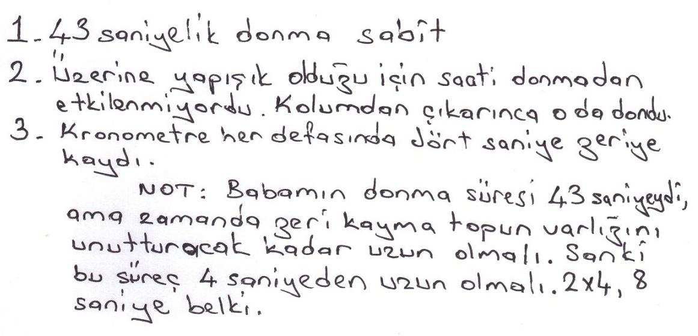
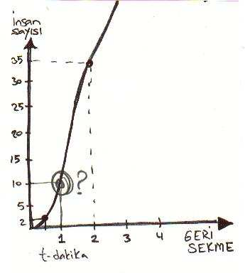

Ö S
N ÖZ
Ö
Buzul Dünya’nın
TekinsizX Atmosferi
Sevgili Buzul Dünya okurları,
Kendimi bildim bileli TekinsizX öykülerin, filmlerin ve hatta anıların
tiryakisi oldum. Merak, araştırma, heyecan ve korku bağımlısıyım.
Damarlarımda kanımın; içi siyah köpüklü korku zerrecikleriyle kıvıl kıvıl
fokurdamasından zevk duyanlar taifesindenim.
Terim üretmeyi seviyorum. Damarlarımızdaki korku zerrecikleri için
‘korkulobin’ terimini uydurdum örneğin. Böyle bir makale de yazdım
sonradan. 2007’de Atlantik yakınlarındaki bir radyoda program yaparken
konu başlığı oldu. Tekinsiz bildiğiniz gibi Đngilizce ‘haunted’ anlamına
geliyor. Paranormal, metafizik alan etkinlikleri manasına. Bizim taraflarda
daha çok cin ve hortlak işleri gibi algılanır malum. Bu alanı tarayan, ama
sadece o olmayan tür ise çok yaygındır. Polisiye, bilimkurgu, fantastik,
korku, paranormal ve dram karışımı türde yapılmış gerilim filmleri, dizileri
bayağı yaygındır. The X Files, The Outer Limits, Twilight Zone, 4400, Ray
Bradbury öyküleri dizisi, Lost, Fringe ve benzerleri gibi. Benim TekinsizX
terimim bu türü tek bir adla ifade etme çabamdan doğdu.
Zaman Tozları
TekinsizX vakalar hafiyesi Osman Demir bir süre Almanya’da bir
üniversitede öğretim görevlisi olarak çalışmış bir bilim insanıdır. Şu sıralar
Đstanbul Anadolu Yakası’nda, Feneryolu civarında ikamet etmektedir.
TekinsizX alanına özel bir ilgisi ve yeteneği vardır. Bir uzmanlık durumu söz
konusudur yani. Osman Bey bu vakaları sabık bir hacker olan yazılım
gurusu Terra Fuat ve hem ilahiyat hem de fizik okumuş Keten Hoca’nın
yardımıyla çözer. Zaman zaman emniyetin de bu üçlüye yardım için
başvurduğu olmaktadır.
Zaman Tozları kendi türünde sanal ortamda yayınlanan ilk derli
toplu romanımız oluyor sanırım. Osman Bey’in serüvenlerini 2006 yılında
önce televizyon dizisi olarak tasarladım ve senaryo şeklinde yazdım. Şu
anda elimde henüz film alanına ayak basmamış dört senaryo var. Zaman
Tozları senaryodan metne uyarladığım ilk roman. Zaman elverdikçe
diğerleri de bu formata arzı endam edecek.
Buzul Dünya yeni doğmuş, çok genç bir serüven kanalı. Ozancan ve
Gökcan’ın sıcak nefes üfledikleri bir ilham mekânı olarak umarım uzun
ömürlü olacaktır. Genç kurucular olan Canlar’a, katılımcı yazarlara ve
çizerlere sofistike bir gayretkeşslik mertebesi ve enginlere sığmaz esin
genleşmeleri diliyorum.
Sadık Yemni
Hayal Tozu Gölgecisi
sadikyemni.net
5
1
Metin kendinde bir gariplik saptayabilmek için aynadaki aksini uzun
uzun süzdü. Günlerden pazardı. Pazartesi ile Perşembe günleri arasında
komada yatmış biri için çok yanlış bir görünümü vardı. Yüzü yeterince
soluk, gözlerinin altı mor değildi. Yürürken topallamıyordu. Hiçbir yeri
ağrımıyordu. Karnı acıkmak üzereydi. Zihninde; Kadıköy’de her zaman
gittiği yerde yiyeceği bir sandviç hayali beslemekteydi. Ölümden kıl payıyla
dönmüşlük bu kadar ucuz bir şey miydi?
“Anne, baba, ben çıkıyorum.”
Annesi babası misafir uğurlar gibi hole gelmişlerdi. Babası
eşofmanlıydı. Az sonra yürüyüşe çıkacaktı. Bakışları, az önce kendinin de
yaptığı gibi, iyi görünümünün ardına geçmek istiyordu. Geçen pazartesi
günü dört arkadaşıyla sağanak yağmur sonrasında bir su birikintisinden
geçerlerken, kopup suya düşmüş elektrik kablosunun kurbanı olmuşlardı.
Dört kişilik masa tenisi grubundan bir tek o sağ kalmıştı. Gazetelerin birinci
sayfasına çıkmışlardı.
“Çok geç kalma e mi?”
Metin gözleri tıpatıp kendine benzeyen kadına sevgiyle baktı.
“Merak etme. Akşam yemeğine evdeyim.”
“Yaprak dolması yaptım sana.”
Zaman Tozları
“Miyam miyam.”
“Harçlık durumu yeterli mi?”
Metin babasına bakarak başını salladı. “Yeterli ötesi bile denebilir.”
Hastaneden çıkınca bir dizi şımartılma eyleminden geçmişti. Buna
harçlık da dâhildi.
“Đyi. Dikkatli ol.”
“Merak etmeyin. Bu defa dikkat edeceğim. Suların içinden geçmek
falan yok. Çişin üstünden atlarken de estağfurullah diyeceğim. Dedem öyle
tembih ederdi ya ben küçükken.”
Annesi ve babası sessiz kalınca Metin kapıyı araladı ve geriye
bakarak, “Hoşça kalın,” dedi.
“Güle güle oğlum.”
Merdivenleri inerek sokağa çıktı. Kapıda durumu bilen bir kimseyle
karşılaşmadığı için memnun, hızlı adımlarla ana caddeye doğru yürüdü.
Geçmiş olsuna gelen misafir, akraba ve arkadaşlarına ne olup
bittiğini anlatmaktan gına gelmişti.
Az sonra Kadıköy’de gezinirken, iki-üç gündür hafiften hissettiği bir
yanı güçlendi. Dışarıda, ‘insanları, eşyayı, gökyüzünü her şeyi yeni bir gözle
görüyorum’ duygusu abandı üzerine. Buna ilişik, sanki komadayken bildiği
ama şimdi unuttuğu bir şey daha vardı. Bir hat. Farkındalık hattı
eklemlenmişti hayatına.
Birden oradan koptu ve son üç gündür en çok düşündüğü şeylere
geçti. Aklına Ferhat, Ali ve Semih gelince gözleri doldu. ‘On Yedi Yaşında
Biten Dört Hayat’ yazmıştı gazetenin biri. Hayatlardan biri devam etmişti
sonradan.
7
Sadık Yemni
Arkadaşlarını bir daha göremeyeceğini düşünmek suçluluk
duygusunu depreştirmişti yeniden. Allah’tan Semih hariç ikisi çok yeni
arkadaşıydı ve ailelerini tanımıyordu. Her dakika yaptığı yeniden
kurgulamaya daldı. Dört arkadaş o su birikintili sokaktan değil, diğerinden
geçiyorlar ve az sonra buluşup masa tenisi oynuyorlar. Hepsi de geçen
pazartesi gecesi aynı rüyayı görmüşler falan. O filmlerde olduğu gibi…
Ani bir dürtüyle pazartesi öğleden sonra masa tenisi oynadığı yere
yönelmek isterken, diğer hat kendine acıma ve sahte suçluluk duygusu
üreten jeneratörün düğmesini kapatıverdi.
“Şimdi. Đçeri gir.”
Metin kulağında çınlayan ses nedeniyle hiç irkilmediğine
şaşamayacak haldeydi. Uysalca etrafına bakındı. Anahtar adlı bir internet
kafenin önünden geçmekteydi.
“6 numaralı bilgisayar. Haydi. Gir içeri. Enter’a basman yeterli.”
Sesin sahibini sorgulayan yanı Andromeda gökadası kadar uzaktı
sanki. ‘Koma sırasında tanıştığın ses’ demekteydi iç kayıtlar. Đnternet kafe
yarı yarıya doluydu. Girişte altı bilgisayar daire şeklinde yerleştirilmişti.
Kalan kısım tek sıra bilgisayarlarla devam ediyordu. Bunun için mi buraya
anahtar ismini vermişlerdi acaba?
Metin yaltaklanan ses tonundan telefonda henüz yatmadığı bir kızla
konuştuğunu tahmin ettiği yirmi beş yaşlarındaki delikanlıya 6 numaralı
bilgisayarı işaret etti. Kıvırcık siyah saçlı adam başıyla tamam işareti verince
gidip makinenin önüne oturdu. Sol yanı boştu. Sağında uzun boylu, lacivert
cin pantolonlu kısacık saçlı kumral bir kız oturmaktaydı. Kafasında
8
Zaman Tozları
kulaklıkla fısıltı halinde konuşmaktaydı. Ciddi bir konu olmalıydı. Bu
dünyadan kopup gitmişti sanki.
ENTER tuşuna basınca; internet kafenin tarifesi, logosu ve iki reklam
fotoğrafı yok oluverdi. Ekranın karalığı normal değildi. Üç boyutlu diyeceği
geliyordu. Etrafına bakındı. Đdareci, telefonda konuşmaya devam
etmekteydi. Kimsenin kendine dikkat yapıştırdığı yoktu. O bakarken içeri
girip girmemek için tereddüt eden, kısa boylu öğrenci tipli genç, fikrini
değiştirmişti.
“3’e kadar say ve avucunu ekranın tam ortasına koy.”
Metin hipnozda gibi, her şeyi boş vererek denileni yaptı. Ekran
avucunun ortasını ittirmeye başladığında uzaktaki Metin küçük bir çığlık
koyuverdi.
Olay yeri sessizdi ama.
“Onu al ve çok doğal bir hareketle cebine koy.”
Metin golf topu büyüklüğündeki tırtıllı beyaz topçuğa saatlerce
bakmak istiyordu. Bu duygusunu güçlükle yenerek nesneyi montunun sağ
cebine koydu.
“Hemen çıkma. Birkaç site ziyareti falan yap.”
Metin saniyelerdir tuttuğu nefesini koyuvererek etrafına bakındı.
Asayiş berkemaldı. Herkes kendi işine dalmış durumdaydı. Dışarıdan cebine
dokundu. Küresel sertliği hissedince, içini bir sevinç kapladı. Delirmemişti. O
topçuk gerçekti. Đçi içine sığmayarak birkaç siteye girdi. On-on beş dakika
sonra 1 TL ödeyerek dışarıya çıktı. Đdareci hâlâ o kızla konuşmaya devam
etmekteydi. Sesinde belli belirsiz bir yalvarma tınısı belirmişti. Metin henüz
kadınları iyi tanımıyordu, ama adama pek şans vermemekteydi.
9
Sadık Yemni
***
“Merhaba. Su içmeye kalkmıştım. Işığın yanıyordu. Bir bakayım
dedim.”
Gece yarısını biraz geçmekteydi. Metin beyaz topçuğu masanın
üzerine koymuş, büyüteçle incelemekteydi. Üzerinde minik ve sarı bir
düğme vardı. Bu düğmeye defalarca basmıştı haliyle. Eğer ekranın
yüzeyinde belirdiğini gözleriyle görmeseydi çoktan çöpe atardı, ama bu
kadar olağanüstü bir nesne ona boşuna verilmiş olamazdı.
“O da ne öyle?”
“Bu mu? Top.”
“Ne topu öyle?”
Tam topu adama uzatacağı sırada, iç ses kulaklarında çınladı. “1,2,3…
Zaman tozları saçmaya başlıyoruz! Düğmeye bas.”
Metin topçuğun düğmesine basınca, babasının topçuğu almak için
uzattığı eli havada dondu. Ağzı da bir şey söylemek için aralandığı şekilde
kalmıştı.
“Topu cebine koy çabuk.”
Metin söyleneni yapmak için harekete geçerken korkuyla adama
bakmaktaydı.
“Baba… baba iyi misin?”
“Topu sakla önce. Babanın bir şeyi yok.”
10
Zaman Tozları
Metin topu masasındaki çekmecenin içine tıktı. Adam hâlâ aynı
şekilde durmaktaydı. Aradan buz gibi saniyeler gelip geçti. Babası birden
donukluğundan sıyrıldı.
“Merhaba. Su içmeye kalkmıştım. Baktım ışığın yanıyor.”
Metin acayip rahatlamıştı adamın donukluğunun çözülmesine.
“Đyiyim baba, merak etme. Hayallere dalmıştım. Sen birden içeri
girince…”
Babası garip bir şekilde topun varlığını unutmuş gibiydi.
“Hayale devam o zaman. Çok geçe kalma.”
“Tamam.”
“Đleride senin de oğlun kızın olunca böyle laflar edeceksin.”
“Söz, edicem.”
Metin masasının üst çekmecesini açıp beyaz topçuğa baktı. Babasının
gitmesinin üzerinden yarım saat geçmişti. Yatak odasının kapısında kulak
vermişti. Numara falan yaptığı yoktu. Babası kendine has horultusuyla uyku
püfürdetmekteydi.
Metin bir bilimkurgu kitap kurdu ve film sırtlanıydı. Lise üçteydi ve
fiziği, matematiği çok iyiydi. Aklına ilk gelen şeyi denemek için topçuğu
masanın üstüne koydu. Kronometreyi 0 yerine 10’dan başlamak üzere
hazırladı. Gözü bileğindeki dedesinden kalma kol saatinin saniye ibresinde,
eşzamanlı olarak topçuğun ve kronometrenin düğmesine bastı.
Sonuç şoke edici olmakla birlikte beklentisini doğrular nitelikteydi.
Kolundaki saat çalışmaya devam etmiş, kronometrede hareket başlar gibi
olmuş ve donmuştu. Kronometre durduktan kırk iki-kırk üç saniye kadar
11

Sadık Yemni
sonra tekrar çalışmaya başlamıştı. Ama aynı yerden değil. 10. saniyeden 06.
saniyeye gerilemiş sonra çalışmaya devam etmişti.
Deneyi dört kez yineledikten sonra bazı şeyleri kesin bildiği
söylenebilirdi.
Güncesine şöyle bir not aldı.
Böyle bir aparata sahip olmanın hazzı, şaşkınlığı, korkusu muazzamdı
haliyle. Acaba beyinde bir hasara yol açıyor olabilir miydi? Aklında bin tane
endişe dans etmekteydi. Gizli servisler böyle bir aparatı ona mal ederler
miydi? Kim bilir, belki şu anda kapıyı kırıp içeriye girmeye hazırlanıyorlardı.
Diğer yandan kendini seçilmiş biri gibi de hissetmekteydi. Üç arkadaşı
ölmüş, kendisi komadan çıkmayı başarmıştı. Bu topçuk bunun mükâfatıydı
belki de.
“1,2,3… Zaman tozları saçmaya başlıyoruz Metin.”
Metin damarlarındaki adrenalin yüzünden o gece uyuyamadı. Sürekli
dışarıdan gelen sesleri dinledi. Perdenin aralığından sokağı kolaçan etti
12
Zaman Tozları
durdu. Topçukla iki kez daha aynı deneyi yineledi. Sonuç aynıydı.
Ambulansla hastaneye götürülürken kalbi iki kez durmuş ve ancak
müdahaleyle yeniden çalışmıştı. Doktor, “Ölümden dönmesi mucize,”
demişti. Mucizeler ikizdi anlaşılan. Sabah beş civarında, giyinik vaziyette,
yatağın üzerinde derin ve rüya boşluksuz bir uykuya daldı. Sabah yedide
çalar saat çaldığında, sekiz saat deliksiz uyumuş gibi zinde hissetmekteydi
kendini. “Komadan ikinci kez çıkmıştım,” diyecekti sonradan bu anlar için.
***
Metin kimselerin ne işe yaradığını bilmediği topçukla sokakta
gezmekten çok tedirgindi. Aradan bir hafta geçmişti. Eve döndüğünde
zaman tozutan aparatın yok olduğunu ya da evin yandığını göreceğini
düşündüğü anlar geride kalmıştı. Bunların hiçbiri olmamıştı. Kimse peşinden
gelmiyordu, ama şu anda cebinde onun ağırlığını hissetmeyi hâlâ korkutucu
bulmaktaydı. Sanki üzerinde minik bir nükleer bomba taşıyan bir teröristti.
Uzaktan tanıdık iki kızın geldiğini fark edince girdaplı düşüncelerden
bir anda sıyrıldı. Kızlar onu görünce farklı yüz ifadeleri takınmışlardı. Kumral,
uzunca saçlı olanı candan gülümsemiş, dolgun dudaklı, kabarık siyah saçlı
havalı kız ise, “Sen de nereden çıktın şimdi?” dercesine yarım tebessümle
bakmaktaydı.
“Merhaba Çiğdem. Meltem.”
“Merhaba Metin,” dedi kumral kız. Kahverengi gözleri samimi bir
ilgiyle parlamaktaydı.
13
Sadık Yemni
Metin içinin ılındığını hissetti. Çiğdem’i altı aydır tanıyordu. Sınıf
arkadaşıydı. Kıza deli gibi âşıktı Metin. Beyaz kısa anorağıyla dünyanın en
güzel kızıydı. Meltem dar turuncu süveterinin önünü geren şeyleri daha
bağırtık sergileyen dar bir kazak giymişti. Bir yetmiş beş boyunda uzun
bacaklı, kendini beğenmiş havalı bir kızdı. “N’aber Metin. Şey… Bizim biraz
acelemiz var da. Đyi akşamlar.”
Metin isteksiz adımlarla yürüyen Çiğdem’in arkasından bakarak içini
çekti. Bir kere fizik dersinde Meltem’le yan yana oturmuşlardı. Metin kıza
yardım etmediği için Meltem çok bozulmuştu. Hocanın gözü üzerlerindeydi.
Yoksa kopya verirdi. Daha önce yaptığı bir şeydi. Aşırı gururlu kız bunu kabul
etmiyordu.
Kararsızlığından hızla sıyrıldı. Yürüdükleri yönden Meltem’in evine
gittikleri belliydi. Saat sekize geliyordu. Hava kararmıştı. Cumartesi akşamını
birlikte geçireceklerdi herhalde. Đçinde Çiğdem’i sürekli olarak ondan kaçıran
Meltem’e karşı bir öfke büyümekteydi.
Bezgen Apartman’ın kapısı kapalıydı. Hiç tereddüt etmeden küçük
bahçeyi geçerek zillere baktı ve kapıcının ziline bastı. Đkinci basıştan sonra
merdiven altında bir aydınlanma oldu. Bıyıklı, kırk yaşlarında, kısa boylu bir
adam kapıyı araladı.
“Buyurun kimi…”
Metin adamı hafifçe kenara iterek içeri girdi. Asansör alt katta değildi
ve bekleyecek zaman da yoktu. Ayaklarının ucuyla basamakları çıkmaya
başladı. Az sonra, kapının kapanma sesini duydu. Kapıcı ne için kapıya
geldiğini hatırlıyor muydu acaba?
14
Zaman Tozları
Meltemlerin kapısına geldiğinde nabzı hızlanmıştı. 11 numaralı kapıya
bakarak cesaret toplamaya çalıştı. Evde kaç kişi olduğunu bilmiyordu.
Meltem tek çocuktu. Birkaç gündür her fırsatta babasının iş için Japonya’ya
gittiğini anlatıp durmaktaydı. En fazla üç kişiydiler yani. Derin bir nefes aldı
ve apartmanın ışığını yaktı. Kronometreyi ayarlayıp kapının eşiğine yere
bıraktı. Sonra kapıyı tıklatıp kızın onu rahatça görebileceği şekilde durdu.
***
“Ne bulursun şu hayalci Metin’de bilmem.”
“Bir iki kelime konuşacaktım ya. Çocuk ölümden döndü.”
“Yapışkan bir tip.”
Anorağını portmantoya asan Çiğdem, Meltem’in Metin’den gıcık
kaptığını bildiği için alttan alıcı bir şeyler diyecekti, ama kızın haksız
davranışına dayanamayıp, “Sana fizik dersinde kopya vermedi diye
bozuksun,” dedi. “O kadar ders de çalıştırdı üstelik.”
“Hiç de değil.”
“Öyle öyle.”
Meltem bu konuyu sündürmeye niyetli değildi. Omuzlarını silkerek,
“Hazır hamburger var,” dedi. “Beş dakikada ısınır. Birazdan hazırlarız.
“Babam Tokyo’da, annem Kongkeng’de. Ev bizim yani.”
“Karnım hiç aç değil,” dedi Çiğdem küçük dolaptaki terliklerden birine
uzanırken.
“Bir şey içer miyiz? Bira falan?”
“Đyi kızlar öyle şeyler içer mi? Hem de bu saatte?”
15
Sadık Yemni
Meltem ayakuçlarında biraz yükselip yüzünü komikleştirdi. “Hangi iyi
kızlar?”
Tam o anda kapı çalındı.
“Birini mi bekliyorsun?”
Çiğdem kapının gözetleme deliğine doğru seğirtirken, “Brad Pitt’i,”
diye fısıldadı. Gözden dışarı baktı. Yüzündeki gülümseme silinmişti. Hışımla
kapıyı açtı.
***
“Sen misin Me...”
Kızlar holde donmuş kalmışlardı. Metin kapıyı örtüp hızla işe girişti.
Bu eve Meltem’in on altıncı yaş gününde gelmişti ilk ve son kez. Daha
sonraki partilerden hiçbirisine davet edilmemişti. Bunda ders çalışırlarken
Meltem’le biraz yakınlaşmalarının da etkisi vardı. Kız aşırı kıskanç biriydi.
Mutfağa gitti ve etrafına bakındı. Ketçapı aldı ve yerine bıraktı.
Meltem’in sık sık, “Hardaldan nefret ederim,” dediğini hatırlamıştı. Acı hardal
etiketli, yarısı dolu plastik şişeyi alarak hole gitti. Meltem’in pantolon
kemerini arkadan hafifçe çekerek bollaştırdı. Plastik şişeyi iyice içeri sokarak,
hardalı kızın iki karpuzunun ara yerine doğru bir kez sıkıp geri çekti. Koşar
adımlarla mutfağa gidip hardalı yerine bıraktı ve geri döndü. Otuz iki saniye
geçmişti. Bitiştirdiği iki parmağının ucunu öpüp Meltem’in yarı aralık
dudaklarına değdirdi ve sonra kapıyı açıp dışarı çıktı. Kapıyı örttü. Yerden
kronometreyi kaptı, ışığı yakan düğmeye basıp hızla merdivenlere hamle
16
Zaman Tozları
etti. Bir kat inip durdu. Kronometre hareketlendikten beş saniye sonra kapı
açıldı ve kapandı.
Kronometre tam otuz dört saniye geri kalmıştı. Topçuk kırk üç
saniyelik standart donmalar yapmaya devam etmekteydi. Kendi tek başına
olduğunda dört saniye geri kalan kronometre, iki kızla beraberken otuz dört
saniye geri kalmıştı. Babasıyla da sekiz saniye kadarlık bir geri sekme
olmuştu. Üç kişiyle otuz dört saniyelik geri sekme, beklemediği bir sonuçtu.
On iki saniye olması lazımdı aklınca, ama sonuç farklıydı. Demek ki
dondurduğu kimselerin sayısı arttıkça zıplamalı da olsa geri sekme de doğru
orantılı olarak büyümekteydi. Çok manyakça bir şeydi bu. Hiçbir filmde
böylesini görmemişti.
Apartmandan dışarı çıkınca, camdan bakan var mı diye üst kata baktı
Metin. 11 numaralı dairenin camları kapalıydı. Sakin adımlarla sokağa çıkıp
yürümeye başladı. Şimdi içeride olup, ne olacağını görmek için neler
vermezdi.
***
“Zil mi çaldı kız?”
Meltem arkadaşına baktı. Yüzü ciddiydi. Holde durdukları için
duymamaları imkânsızdı. Yüzüyle ‘hayır’ anlamında bir işaret yaptı. Kız
tatmin olmamıştı. Kapıyı açtı ve kat lambasını yaktı. Sonra içeri girerek kapıyı
kapattı.
“Bir an… Neyse ne içiyoruz?”
17
Sadık Yemni
Çiğdem tam bir şey diyeceği sırada kızın yüzündeki şaşkınlık ifadesi
nedeniyle suskun kaldı. Meltem elini arkadan kalçalarına götürmüş
pantolonun üzerinden yoklamaktaydı.
“Bu ne ya?”
“Ne oldu ya Mel? Ped mi lazım?”
Meltem’in yüzündeki şaşkınlık koyulmuştu. “Daha on gün falan. Gidip
tuvalete bir bakayım. Sen geç otur.”
Meltem neredeyse koşar adımlarla tuvalete doğru giderken Çiğdem
ardından bakakalmıştı.
***
“Kim yapmış olabilir?”
Meltem’in ağlamaktan gözleri kızarmıştı. Pantolonunu çıkarmış,
yerine uçuk mavi bir eşofman altı giymişti.
Çiğdem kıza acıyordu, ama burnundan kıl aldırmayan Meltem’in
kıçının acı hardaldan yanması nedeniyle içinde gülme kabarcıkları fışkırıp
durmaktaydı.
“Daha eve yeni girmiştik. Đkimiz yalnızdık. Hiç ayrılmadık
birbirimizden. Senin kendi kendine yapma imkânın da yoktu.”
“Kız öyle söyleme. Ben kafayı mı yedim ki öyle bir şey yapayım?”
Çiğdem dayanamayıp sırıtınca Meltem de ona uydu.
“Belki biz buluşmadan önce oturduğun kafede bir şeyler olduysa.”
Meltem’in aşırı özenle inceltilmiş kaşları havaya kalkmıştı. “Bak bu
olabilir,” dedi. “O Faruk adlı şaklaban. Evet. Yapsa yapsa… Odur mutlaka. Bir
18
Zaman Tozları
ara sırtım ağrıyor demiştim de, Hint masajı yaptı. O sırada yapmıştır
mutlaka.”
“Hint masajı mı?”
“O tarafı önemli değil şimdi. Yarım saat duş yaptım hâlâ popom
yanıyo. Ben sana gösteririm Faruk. Aikidocu eski sevgilime bir dayak
attırayım da görsün gününü. Đsmet. Bana yaranmak için ne yapacağını
bilmiyor zavallı zaten. Faruk tabii. Başka kim olabilir?! Görür gününü o.”
Çiğdem dayanamayıp sırıtınca Meltem yalandan bozuluyormuş gibi
yaptı.
“Senin kıçın yansaydı görürdük.”
“Haklısın valla.”
Aklına Meltem’in zil çalmadığı halde kapıyı açması gelince Çiğdem’in
içindeki gülme hissi kayboldu. Farkında olmadan alnını kırıştırmıştı. Metin’le
karşılaşmalarını düşündü. Meltem çocuğa çok kaba davranmış ve sonra felek
onu hafiften cezalandırmıştı. Bu düşünce silsilesi çok uçucu bir durumdaydı.
Belleğinde depolanmadan uçup gitti. Brad Pitt’i hatırladı ardından. Meltem
hayrandı adama. Ne alakası vardı şimdi?
19
2
“Karlofça Antlaşması, 26 Ocak 1699 tarihinde, Osmanlı Devleti ile
Avusturya Đmparatorluğu arasında imzalanmış olan bir barış antlaşmasıdır.
Karlofça bugünkü Sırbistan'ın sınırları içinde yer alan küçük bir kasabadır.
Antlaşma Osmanlı-Kutsal Đttifak Savaşları'nı bitirmiştir.”
Metin not alan Çiğdem’e yan gözle baktı. Eğildiği için saçları önüne
düşmüştü. Dünyanın en güzel kızıydı. Yanında oturan, siyah saçları
omuzlarında kıvır kıvır lüleli, beyaz ince kazağı göğüs hizasında iyice
kabarık duran diğer kız, gözü arkadaşının kâğıdında bir şeyler yazmaktaydı.
Tarih öğretmenleri Belma Hanım, yazılılarda yeni bir yöntem
denemekteydi. Önce bir paragraf genel bilgi not ettiriyor, sonra o konuyla
ilgili soruyu soruyordu. Bütün soruları bir kerede vermiyordu yani. Böylece
hiç ders çalışmamışlar bile bir şeyler öğrenmekteydiler. Beş soruluk bir
sınavdı. Şu anda ikinci soruyla meşguldüler.
Metin sol elinde heyecandan terlemiş olan topçuğa baktı. Arkada en
sağda oturduğu için, sağ eline geçirdiği incecik lastik eldiven dikkat
çekmemekteydi. Ceketinin sağ cebini dışarıdan yokladı. Kronometreyi not
aldığı kâğıdın üstüne koydu ve düğmeye bastı.
Zaman Tozları
“Sultan II. Mustafa döneminde Osmanlılar Avusturya Đmparatorluğu
üzerine üç büyük sefer düzenlediler. Ancak 11 Eylül 1697’de uğranılan
Zenta yenilgisiyle...”
Bütün sınıf donmuştu. Metin yıldırım gibi harekete geçti. Đlk olarak
ceketinin sağ cebinden çıkardığı bir rujla sınıfın en maço erkeği, karateci
Mesut’un dudaklarını boyadı. Kız hiç yüz vermediği halde Çiğdem’e çok
sulanıyordu. Fizik gücünü kullanarak insan sindirmeyi çok seviyordu.
Mesut’un Rambo’yu andıran gözleri belli belirsiz kıpırdayınca içine
korku girdi. Delikanlının mengene gibi güçlü ellerine baktı. Pilleri bitmiş
oyuncaklar gibi hareketsiz durmaktaydılar. Bir sorun yoktu. Zihinler
yavaşlamıştı sadece. Bedenlerin bazı tepkileri vermesi doğaldı.
Ruju adamın sırasının çekmecesine bıraktı. Đki-üç kişinin önlerindeki
kâğıtları değiştirdi. Çiğdem’in sırasının üstüne, cebinde biraz deforme
olmuş bir papatya koydu. Ve son olarak sekiz gramlık minik bir hardal
paketçiğini Meltem’in yazılı kâğıdının üzerine bıraktı.
Kalbi yerinden çıkacakmış gibi atarak yerine oturduğunda otuz sekiz
saniye geçmişti. Plastik eldiveni pantolon cebine tıktı. Normal yazı yazıyor
pozisyonunu alarak, kalan saniyelerin geçmesini bekledi. Kırk üç saniyelik
standart donma süresi bitince kronometreye baktı. Tam yüz yirmi bir
saniye geri gitmişti. Demek ki insan sayısı çoğaldıkça artan geri sekme
kararlı bir yapıya sahipti. Bu muazzam bir şeydi.
Sınıfta tahminin aksine toplu bir hayret nidası kopmamıştı. Ama
büyük dalga yakındaydı. Hem de çok yakında.
“Hocam birisi benim kâğıdımı değiştirmiş.”
21
Sadık Yemni
Önündeki kâğıtları inceleyen Belma Hanım’ın alnındaki kırışıklık
derinleşirken, bakışı bunu diyen Hikmet’e yöneldi. “Kimmiş peki?”
“Bilmiyorum hocam. Bu kâğıt benim değil. Ahmet Hancı yazıyor.”
Bütün bakışlar hayretle sınıfın en çalışkan öğrencisi olan Ahmet’e
yönelmişti. Kısa kahverengi saçlı, kopça gözlü biri olan Ahmet önündeki
yazılı kâğıdını alıp havaya kaldırınca ses kesilmişti birden.
“Burada da Hikmet Kıvılcım yazıyor.”
Kimse iki öğrenci arasındaki üç sıralık mesafenin farkında değildi.
Hoca akıl erdiremediği bir şeyleri hatırlamaya çabalıyormuşçasına yavaş
tepki vermekteydi.
Ahmet tam ayağa kalkıp bir şey diyecekken, ikinci dalga
patlayıverdi.
“Çocuklar Mesut’u gördünüz mü?”
Bütün bakışlar 1.92 boyunda, ince deri ceketiyle bayağı havalı
görünümü olan Mesut’a yönelmişti. Etli dudakları bas bas bağıran bir
kırmızı renkle rujlanmıştı.
Đri kahverengi gözleriyle güçlenen kırmızı boya bir yeraltı çağlayanı
etkisi yapmaktaydı. Gizli kalmış duygular çağlayanı.
“Ne gülüyorsunuz lan..?”
“Makyajın biraz eksik kalmış. Gözlerine de far sür istersen.”
Bunu diyen, Mesut’un adaşıydı. Yirmi santim kısa, yirmi kilo hafif
olan diğer Mesut yakınlarda bir bahaneyle tartaklandığı için şimdi köküne
kadar gaza basmaktaydı.
“Yakışır sana valla. Değil mi çocuklar?”
“Lan ibne, gelirsem yanına!”
22
Zaman Tozları
“Benim tercihim farklı. Sen Cihangir’e git.”
Mesut hışımla yerinden kalkarken duraklayıverdi. Dudaklarına
değdirdiği parmaklarına bulaşan kırmızılık hızını kesmişti. Yüzü Belma
hanımınkinden daha büyük bir şaşkınlıkla dolmuştu.
“Ulan bunu hanginiz yaptıysanız… Göstericem o kimse.”
“Çocuklar susun. Susun dedim.”
Hocanın sesi iyice yükselince sınıf sessizleşti. Belma Hanım yerinden
kalktı ve tam ortada durup sınıfı süzdü. Bir yanı çok şaşkındı. Bir yanı da
Mesut’un durumunu komik bulmaktaydı.
“Mesut dışarı çık. Yüzünü yıka. Ve zil çalana kadar kantinde bekle.”
Mesut’un kararsızlığı çok kısa sürdü. Omuzları çökük bir durumda,
kapıyı açıp dışarı çıktı. Gözleri yaşlıydı. Metin biraz üzülmüştü kıl tip
olmasına rağmen.
“Allah bilir pantolonun altında külotlu çorap da vardır,” dedi diğer
Mesut.
Mesut’tan gıcık kapanların sayısı bayağı fazlaydı. Laf atmalar devam
etti.
“Sonunda cevherini açığa vurdu. Cesaretini takdir ediyorum. Alay
etmeyin o yüzden,” dedi Hikmet.
Değişen kâğıtlardan daha önemli bir konu bulmuştu.
“Sende de var mı o cesaret?” dedi diğer Mesut. Onun topuna çalım
atmasına bozulmuştu herhalde.
“Cesaret değil, cevher dedim. Anlayışsız hırtlar, ne olacak!” dedi
Hikmet yalandan bozulmuş gibi yaparak. Milletin, özellikle kızların sırıtma
dozajından memnundu.
23
Sadık Yemni
“Kimler kâğıt değiştirdiyse not kırıcam,” dedi Belma hanım. Sesi
inandırıcı değildi pek. Yüzünde, olan bitenlerden bir miktar eğlendiğini açık
eden bir ifade vardı. Böylesi minik ama düzeyli bir rezillik nadiren çıkardı
ortaya.
“Benim kabahatim ne hocam?” dedi Ahmet. “Bütün soruları
biliyorum. Neden böyle bir şey yapayım ki?”
Belma Hanım tam bir şey söyleyeceği sırada Meltem elindeki hardal
paketini kaldırınca bekledi. Kız diğer eliyle de arkadan kalçalarını
yoklamaktaydı. Deneyimli bir öğretmendi. Sürprizlerin henüz bitmediğini
sezmişti.
“Ne oldu Meltem?”
“Benim sıramın üstüne de bu… Bu hardalı koymuşlar.”
“Kim koymuş?”
Kız sessiz kalıp omuzlarını silkince, sınıfta bu defa mantıklı yöne
dönük ilk soru işareti belirmişti. Bu kimin veya kimlerin işiydi? Tam o sırada,
Mesut’un sıra arkadaşı süslü Ayten, çekmecede duran ruju keşfetmişti. Kız
ruju kaldırıp gösterince gülüşmeler bir öncekine göre daha sönüktü. Çok
organize bir işin belli belirsiz varlığını hissetmekteydiler.
“Peki, bu yazılıyı iptal ediyorum. Bir kereye mahsus olarak sizleri
disiplin kuruluna vermeyeceğim.”
Birkaç kişi çekmecelerini kontrol etmeye başlayınca bütün sınıfa
sirayet etti. Çiğdem’in elinde beliren uzun saplı papatya, mini bir kara delik
gibi bütün bakışları üzerine toplamıştı. Saatlerinin toplu olarak iki dakika
geç kaldığını keşfetmelerine henüz zaman vardı.
24

Zaman Tozları
***
Metin odasında yalnızdı. Saat gecenin ikisiydi. Adrenalin fazlalığı
nedeniyle uyku tutmadığından, yakın gelecek planları üzerine çalışmaktaydı.
MP3’üyle müzik dinliyordu bir yandan. Mor ve Ötesi’nden Küçük Sevgilim
adlı parça çalmaktaydı. Zaman dondurmada deneye katılanların sayısı ile
orantılı geri sekme müthiş bir şeydi.
Otuz beş kişiyle yapılan deneyde iki dakikalık sekme olmuştu. Đki kızla
otuz dört saniye, babasıyla da sekiz saniye kadarlık bir geri sekme olmuştu.
Sayı arttıkça sekme de artıyordu, ama artış düzgün değişmiyordu. Çizdiği
yetkinlikten çok uzak grafiğe bakılırsa on kişiyle bir dakikaya yakın bir sekme
25
Sadık Yemni
beklemeliydi. Belki de insan sayısının yanı sıra başka etkenler de rol
oynamaktaydı.
Saatlerin iki dakika geri kaldığı, ders zili çaldıktan hemen sonra
keşfedilmiş ve bomba haber yıldırım gibi yayılmıştı. UFO ve uzaylıların işiydi
haliyle. Mesut, “Beni uzaylılar seçti,” demekteydi. Karizması fena halde
çizilmişti garibanın. Artık onu uzaylılar da kurtaramazdı. Çiğdem’in elindeki
papatya, kızı uzay prensesi yapmıştı bir çeşit. Esas seçilen oydu.
Okulda bir daha kullanmayacaktı zaman tozutma makinesini.
Acemilik devrini bugün noktalamıştı. Aletin son kullanma tarihi, sandığından
yakın olabilirdi. Bu nedenle dikkatini finans sektörüne çevirmesinin zamanı
gelmişti. Orada başarılı olursa; okul, diploma, iş başvurusu, askerlik gibi
konularda hiç sorun yaşamayacaktı. Gelecek, yani henüz işlenmemiş zaman
tarlası tamamen hükmündeydi.
***
Çiğdem bir düşün sarmalındaydı. Yaprak Dökümü dizisindeki
Ferhunde Tekin olarak sınıfta oturuyordu. Aslında uzaylı olan Levent Bey
sırasının çekmecesine kırmızı bir gül bırakmıştı. Az sonra sınıfa girecek, “O
gül bana ait,” diyecek ve ardından da misyonunu ifşa edecekti. Görünürde
kamera, ışık gibi şeyler yoktu. Uzaylılar işe müdahale etmişti. Bu nedenle
gizli kameralarla çekim yapılmaktaydı. Yanında oturan Meltem, elindeki bir
dergide ‘Hardal Kremleri Sürünmenin On Altı Hali’ adlı bir yazıyı okumaya
dalmıştı. Tarih öğretmeni Belma Hanım bugün çok süslüydü. Kürsüde
oturmuş, görünmez rejisörün, “Başla,” demesini beklemekteydi heyecanla.
26
Zaman Tozları
Kapı aralanınca Çiğdem nefesini tuttu. Đçeriye giren Levent Bey değil
Metin’di. Başını sağ arkaya çevirdi. Metin her zamanki yerinde oturmaktaydı,
ama içeri giren başkasıydı sanki. Yüzü kendine güven, güç ve iktidar
ışıldayan yepyeni bir Metin’di.
Tekrar arkaya baktığında rüyanın o sahnesinden koptu ve bir başka
seyir alanına geçti. Meltem’le bir yerdeydiler. Mesut da vardı. Bir parti
veriliyordu. Sınıftan başka kimse yoktu.
Kız daha sormadan, “Metin’i çağırmadım, çünkü sattığı hardallar
bozuk çıktı,” dedi.
Çiğdem bu sözü komik bulmuştu. Tam bir şey söyleyeceği sırada bir
başka sahneye bağlandı. Yanında Metin vardı. Sokaklarda yürüyordu. Bir şey
çok garipti. Neydi, diye düşünürken gözlerini açtı. Yatağındaydı. Gördüğü
şeyler belleğine kayıt edilmemişti. Tekrar gözlerini kapattığında rüyasız bir
uykunun beşiğinde tıngır mıngır sallanırken, zihninde yanıp sönen bir
düşünce lambası, “Çok önemli bir şeyi unuttun,” diye fısıldayıverdi. Đyice
hafiflemiş olan iradesi bir bebeğin yıldızları yakalamak için avucunu
uzatması kadar etkili olmuştu hatırlama işleminde.
***
Metin, Garanti Bankası’nın Göztepe’deki şubelerinden birine girdi.
Yüzünde sarı gözlük ve bir yıl önce bir tiyatro oyunu için satın aldığı hakiki
kıllardan yapılmış takma bir bıyık vardı. Bu kadar önlem kimliğinin
saptanmasını yüzde yüz engellemezdi, ama eylem sırası kayıtları
bulunmayacağından birinci derecede zanlı sayılmayacaktı. Peruka falan
27
Sadık Yemni
takmayı da düşünmüştü. Bunu satın alması gerekecekti önceden. Adam
sonra yüzünü hatırlardı. Riskliydi. Suyla yıkayınca çıkan bir boyayla saçlarını
siyaha boyamış ve iyice kafasına yapıştıracak bir jel kullanmıştı. Bu kadar
tebdil-i kıyafet yeterliydi.
On biri iki geçmekteydi. Numara çekerken etrafı kesti. Bir koruma, üç
memure, üçü işlem gören ikisi oturan beş müşteri, arka bölmelerde çalışan
göremediği iki-üç kişi de dâhil tahminen toplam bir düzine insan vardı.
Oturduğu yerde sırasının gelmesini beklerken planını doğru
kurduğunu gördü. Đçeride para çekecek ya da yatıracak tipler çoğunluktaydı.
Daha poposu sandalyeye değerken sırası gelen uzun boylu, iyi giyimli, orta
yaşlı bir adam, “Sekiz bin lira çekmek istiyorum,” demişti. Şanslı günündeydi.
Kadın işlemi yaparken, kalbi güm güm atarak bekledi. Kadın paraları
saymaya başladığında sol elinde duran topçuğun düğmesine dokunuverdi.
Hareket donunca ayağa kalktı ve adamın önüne geçip baktı. Saçları meçli,
esmer kadın paraları makinede saymış olmalıydı. Seksen adet yüzlüğe bir
lastik geçirmekle meşgulken donmuş kalmıştı. Kolunu uzatıp paraları aldı.
Ceketinin iç cebine koydu ve telaşsız adımlarla kapıya doğru yürüdü. Kapıyı
açıp sokakta her şeyin normal olduğunu görünce rahatladı. Tam o sırada
içeri girmek üzere olan süslü püslü yaşlıca kadına gülümseyip yoluna devam
etti.
Hemen eve gitmedi. Bankadan yarım kilometre kadar uzaklaştıktan
sonra bindiği bir taksiyle Kadıköy’e geçti. Sabah annesine kendini iyi
hissetmediğini söyleyerek okula gitmeyeceğini söylemişti. Okulu kırma
kredisi yüz üzerinden yüz olduğundan hiç sorun olmamıştı.
28
Zaman Tozları
Bir restoranda öğle yemeğini yerken, banka soygununun ne kadar
kolay olduğunu düşündü. Daha iyi planlasa çok büyük rakamlara bile
ulaşabilirdi. Şimdilik daha fazla paraya gereksinimi yoktu. Olduğunda
çaresine bakardı. Yemeği yarıladığında içeriye yirmili yaşlarda iki delikanlı
girdi. Basketbolcu gibi acayip uzun boyluydular. Esmer olanın elinde gazete
vardı. Az sonra adam gazetenin arka sayfasını okurken Metin ön sayfayı
gördü.
Apışıp kalmıştı. Büyük başlık UFO’lar Liseyi Bastı’ydı. Alt başlıklardan
biri de Geri kalan saatler’di. Birden içini bir sevinç ve endişe kapladı. Sevinç,
ülke gündemini saptayan bir eylem yapabilmesinden kaynaklanmaktaydı.
Endişe de işin giderek büyümesi ve dikkat çekmesinden çok, bu küçük
topçuğun marifetlerinin olağanüstülüğünü bütün boyutlarıyla kavramaya
başlamasındandı.
***
“Hesabımdan sekiz bin lira çekmek istiyorum.”
Saçları meçli, alt kat komşusu Şiraz hanıma benzeyen genç kadın ne
dediğini anlamamış gibi bakmaktaydı yüzüne. Cevat Kiraz aynı sözleri
yineleyince kadının donukluğu geçti ve bilgisayarın ekranına baktı.
Önündeki notları inceledi. Alnı kırışmıştı birden.
“Burada size parayı verdiğim görünüyor,” dedi.
Cevat Bey, “Nasıl olur?” diye sordu ve elleriyle ceketinin ceplerini
yokladı. Seksen adet yüzlük oralarda bir yerde olsa hemen hissederdi. “Bir
yanlışlık olmalı.”
29
Sadık Yemni
“Burada kaydı var,” dedi kadın. Yanakları allanmıştı.
Cevat Bey şeker hastasıydı. Karısı bu nedenle çabuk sinirlendiğini
söylemeyi severdi. Şimdi kanın tepesine çıktığını hissediyordu. Bugün
aksilikler günüydü. Sabah arabası çalışmamıştı zaten. Şimdi de başına bu iş
gelmişti.
“Hanımefendi ben kayıt mayıt anlamam. Paramı istiyorum.”
“Ceplerinize iyi bakın lütfen...”
Kadın bunu derken, önündeki kâğıtları inceleyen yanı bir şey sezmiş
olmalıydı. Yüzü bozulmuştu iyice.
Cevat Bey ses tonuna hâkim olarak, “Lütfen müdürü çağırın,” dedi.
Korumanın yanı başında bittiğini görünce, “Bir de polisi tabii,” diye ekledi.
***
Metin eve girince onu mutfaktan gelen nefis kokular karşıladı.
Sinemanın tuvaletinde saçlarındaki boyayı yıkamış ve bıyığı çıkarmıştı. Film
gösterildiği sırada içeride kimsecikler olmadığı için kimsenin dikkatini
çekmemişti yaptığı işlem. Annesi mutfakta yemek hazırlamaktaydı. Đnce
yapılı, orta boylu, yaşını pek göstermeyen biriydi.
“N’aber valide hanım?”
Kadının onun nasıl olduğunu tarayan bakışları içini cızlatmıştı.
Oğlunun geçen haftadan bu yana neler yaptığını bilse şimdi burada düşer
bayılırdı.
“Đyidir. Nerden böyle grantuvalet?”
30
Zaman Tozları
Kadın sabah erkenden bir arkadaşıyla Kozyatağı’ndaki Karfur’a
gitmişti. Kendi tabiriyle dükkân pikniği yapacaklardı. Bu nedenle evden
çıkışını görmemişti.
“Bir arkadaşın ablası evlendi de. Oradan… Bir soyunup geleyim.”
“Olur.”
Metin odasına girince takım elbisesini çıkartıp dolaba astı. Takma
bıyığı
her
zamanki
yerine,
babasının
eski
Meydan
Larouisse
ansiklopedilerinden B harfini işleyenin içine koydu. Paraları dolabın en alt
çekmecesinde duran çoraplardan birinin içine tıktı ve uçuk mavi eşofmanını
giyerek mutfağa gitti.
“Çikolatalı cevizli kek yapıyorum.”
“Miyam miyam.”
Kadın yüzünü inceleyen bakışları daha yoğundu bu kez. “Metin
iyisin değil mi?
“Kötü mü görünüyorum yoksa?
“Yok canım. Biraz fazla şey sadece…”
“Nasıl şey yani?
Kadın sevgiyle gülümsedi. “Nasıl söylesem… Boş ver.”
“Söyle ya. Biraz canlı kanlı, biraz da coşkulu muyum?
Kadın başıyla olumlayınca Metin gidip kadına sarıldı. “Anne ben
neredeyse öldüm unuttun mu? Daha on yedisine basmadan. Sonra geri
geldim. Canım istemedi. Sabah okula gitmedim. Normal değil mi böyle
olmam?”
Kadın dürüst izahatından dolayı rahatlamıştı. Abartılı bir telaşla
oğlunun kollarından sıyrıldı. “Dur yoksa kek yanacak.”
31
Sadık Yemni
Metin elinde mikrofon varmış gibi babasının Nuh nebiden kalma,
eskiden LP denilen plaklarındaki bir şarkıyı sözlerini uyarlayarak söylemeye
başladı. “Sus sus sus kekler yanmasın. Sus sus sus kimseler duymasın.”
Kadın eğilip fırının kapağını açtı ve keki kontrol etti. “Tam
zamanında baktım.”
Metin’in içindeki coşku ansızın sönmüştü. Đçinde beliren bir his çok
mutlu olduğu, normal hayat tarzlı evdeki günlerinin sayılı olduğunu
fısıldamıştı. Kendisi bu evde barınma kekini yakmıştı çoktan. O beyaz
topçuğun düğmesine ilk kez bastığında hem de. Tek basış yetmiş ve
artmıştı.
***
Kapının zili ve cep telefonu aynı anda çalmaya başlamıştı. Osman
Demir okuduğu kitaptan başını kaldırarak sağ yanında duran telefona
uzandı. Özel numaraydı. Hattı açan düğmeye bastı ve, “Merhaba,” dedi.
“Osman, benim Fuat. Đyi akşamlar.”
“Đyi akşamlar.”
“Birazdan görüşebilir miyiz? Bugün Göztepe’deki Garanti Bankası
şubesinde bir şey olmuş. Hacker işi falan değil. Tam bizlik bir mesele.”
Osman Demir daire kapısı açılıp kızı Aygiz belirince ona oturduğu
yerden el salladı ve, “Tamam,” dedi. “Onda senin büroda buluşuruz. Önce
kızımla yemek yiyeceğiz.”
“Tamam. Keten Hoca’yı da aradım. Telefonu almadı. Mesaj bıraktım.
Onda görüşürüz. Biliyor musun bankadaki on bir kişinin de saatleri bir
32
Zaman Tozları
dakikaya yakın geç kalmış. Bütün bilgisayar saatleri de dâhil. Gittim ve
gördüm. 57 saniye. Ne diyorsun?”
“Đşi sana mı verdiler?”
“Bize. Bu hacker işi falan değil bana kalırsa. Daha derin ve boğumlu.”
“Anladım. Görüşürüz.”
“Merhaba peder bey.”
“Merhaba.”
Aygiz hızlı adımlarla yanına gelip yanağa bir öpücük kondurdu.
Siyah muz çoraplar, üstüne gri etek ve siyah kazak giymişti. Uzun kumral
saçları yeni yıkanmış gibi kabarıktı. Đri kahverengi gözleri heyecanla ışıl
ışıldı.
“Nasılsın?”
“Đki ay kaldı üniversite sınavlarına. Çalış babam çalış. Dün Ahmet
Haşim Lisesi’nde olanları duydun mu?”
Osman kızının böyle motor gibi konuşmasına alışıktı. Kendisi de o
yaşlarda düşünce hızıyla söz sarf etme hızını eşit düzeyde tutmayı çok
severdi. Şu anda yeni kocasıyla Bodrum’da yaşayan annesi sessiz, biraz
içten pazarlıklı denen tiplerdendi. Kızı genetik mirası babasından almıştı
yani. Babası eve her gün üç gazete aldığı için haberleri görmüştü. Son iki
günde Đstanbul’un Asya tarafında birbirine yakın semtlerde saatler geri
kalmaya başlamıştı.
“Şu UFO olayı mı?”
“UFO mu sence?”
“Daha teşhis koymadım bayan.”
33
Sadık Yemni
Aygiz konuşmasından gazeteleri aşan bir şeyi bildiğini ya da
sezdiğini hissetmişti. Gülümseyerek kazağını sıyırdı üstünden. Altına gri
renkli bir kolsuz tişört giymişti.
“Dedem yok galiba.”
“Bu akşam olgun erkekler arası dama şampiyonası var. Semt
çapında. Oraya gitti. Gece ikiden önce gelmez.”
“Son kupayı altı yıl önce kazanmıştı,” dedi Aygiz.
Osman babasına güvenmekteydi. Bu akşam da bir kupayla dönmesi
muhtemeldi. Son üç yarışmada ikinci olmuştu çünkü.
“Bakalım.”
“Ne yiyoruz?”
“Etli türlü ve pilav. Yanına da cacık.”
Aygiz yalanıyor gibi yaptı ve, “O okulda arkadaşlarım var,” dedi.
“Otuz beş kişinin birden saati iki dakika geri kalmış. Sadece o değil. Mesut
diye karate şampiyonu bir gence ruj sürmüşler. Yazılı kâğıtları karışmış.”
Osman’ın bu iki olay arasında ilişki hisseden yanı iyice güçlenmişti.
Terra Fuat’ın sesindeki heyecan boşuna değildi.
“Bir de çoban salata yapsak.”
Aygiz bu aşamada ağzından laf alamayacağını hissetmişti. Ellerini
teslim oluyorum anlamına yukarı kaldırdı ve, “Salatayı ben yaparım,” dedi.
***
“Buna alışabilmem mümkün değil,” dedi Fuat. “Manyakça bir şey ya.
Yüksek çözünürlüğe sahip renkli sabit kameralar bunlar. Yeniler bayağı.
34
Zaman Tozları
Kayıtlar elli yedi saniye geriden devam ediyorlar. Bütün kameralar aynı süre
geri kalıyor.”
Fuat heyecanla yerinden kalkmış, ayakta durmaktaydı. Red Kit’i
andıran, orta boylu, ince yapılı, soluk benizli biriydi. Uçuk mavi gömleğini,
siyah kot pantolonunun üzerine salmıştı. Tıraş olalı yirmi saat olduğu halde
yüzü pırıl pırıldı. Bilgisayarla ilgili her şeyin satıldığı dükkânının arka
tarafındaki tamirat alanı ve büro olarak kullandıkları yerdeydiler. Saat gece
yarısına yaklaşmaktaydı. Keten Hoca önemli bir işi nedeniyle
gelemeyeceğini bildirmişti.
Đki ekranda Garanti Bankası’ndan alınma görüntüler bulunmaktaydı.
Birincide, para çekmek isteyen Cevat adlı avukat banka memuresiyle
konuşuyordu. Nüfus cüzdanı, banka kartını kadına veriyor. Kadın tuşlara
basıyor. Yüzünde tamam sorun yok işareti. Saat 11.08’di. Birden bir başka
sahneye geçiliyor. Adamın yüzü şaşkın. Memurenin de öyle. Saat 11.06.
Diğer ekranda içeriye 11.00’den itibaren girenlere bakmışlar, olay
sonrasında bunların üçünün olmadığını saptamışlardı. Dışarıdaki kamera
sokaktan gelenleri kaydetmişti. Đçeri giren yaşlıca bir kadın, dışarı çıkan
sakallı bir adam ve bir delikanlı. Sakallı adam iki sokak ötedeki Mehtap
apartmanının kapıcısıydı. Su ve elektrik paralarını yatırmak için gelmişti.
Đşlem yaptırmadan çıkan tek kimse on sekiz yaşlarında, takım elbiseli,
gözlüklü bir delikanlıydı.
“Đnsanın aklına ünlü Philedelphia Deneyi geliyor,” dedi Fuat.
“Üzerine manyetik alan uygulanan destroyer bin kilometre ötede
görünmüştü. Tayfaların bazıları görünmezleşmişti deniyordu. Delirenler
35
Sadık Yemni
olmuştu. Birisi ya da birileri belki de bu tür bir manyetik alan oluşturup
zaman-mekân dengesini bozuyor.”
“Daha 1943’de o tür şeyler yaşandıysa, şimdi hayli hayli diyorsun
yani?” dedi Osman. “O zaman dev jeneratörler kullanılmıştı. Eğer işi bitiren
bu delikanlıysa bunu nasıl yapmış olabilir? Yanında çanta bile yok.
Fuat başıyla olumladı. “O da doğru. Bir diğer konu, çalınan paranın
komikliği. Ben de böyle bir durum yaratma gücü olsa milyarları devirirdim.”
Osman gülümsedi. “Merkez bankasını mı soyacaktın yani?”
Fuat’ın yüzü ciddileşmişti. “Borsa,” dedi sır verir gibi. “Elli yedi
saniyede neler yapılabilir.”
Fuat otuz iki yaşındaydı. Yirmi altı yaşında Đstanbul’un bir numaralı
hackeri sıfatına sahipti. Lakabı Terra Fuat’tı. Şimdilerde dükkânın yanı sıra
banka ve şirket bilgisayarlarını, sistemlerini hackerlara karşı koruma işi de
yapmaktaydı. Dört yıldır beraber çalışmaktaydılar.
Osman, “Haklısın,” dedi ve parmağıyla, ekranda sureti donmuş
delikanlıya dokundu. “Sırrın anahtarı bu kimsede.”
Fuat içini çekerek başını salladı. “Bence de.” Gelip yerine oturdu. “Bir
şey daha var.”
Fuat tuşlara dokunarak bankanın içini gösteren görüntüyü yavaş
çekimle geriye doğru oynatmaya başladı. Durdurdu. Đstediği şey olmamıştı.
Đleriye doğru hareket ettirdi. Osman arkadaşını iyi tanırdı. Yüzünde beliren
ciddiyetten olağandışı bir şey yakaladığını hissediyordu.
“Bak şuraya.”
Ekranda eşyasız, tepesinden ışık alan bir yer görünmekteydi. Kapısı
aralıktı. Kapı ağzında hatları seçilemeyen biri duruyordu. Đncecik yapılı uzun
36
Zaman Tozları
boylu biriydi. Yüzü loşluk ve çözünürlüğün azlığı nedeniyle seçilemiyordu.
Yalnız kafasının çok garip bir şekli vardı. Vatoza benziyordu. Belki kafasında
şapka vardı.
“Bu kim sence?”
“Çok garip. Eski kayıt olmasın?” dedi Osman.
Fuat alnını kırıştırdı. “Yeni kameralar bunlar. Sadece iç mekânda olan
bitenleri kaydediyorlar. Ayrıca ne kadar yavaş ileri geri de gidilse her
seferinde yakalanmayan çok uçucu bir sahne bu. Tam yerini bile saptamak
mümkün değil. Çünkü yer değiştiriyor.”
“Hoca burada olsaydı,” dedi Osman. Đçinde bir kuşku uyanmıştı.
Okült uzmanı olan arkadaşı Keten Hocanın bir görmesini istiyordu.
“Bir korku filmine ait sahne gibi değil mi?” dedi Fuat. “Makinedeki
hayalet temalı bir film gibi.”
“Gibisi fazla gibi,” dedi Osman ve boşalmış kahve fincanını işaret
etti. “Bir kahve daha içiyor muyuz? Konuşacak çok şey var. Dün bir lisede
otuz beş kişinin saatleri iki dakika geri kalmış.” Gazeteyle, haberlerle ve
televizyonla işi olmayan Fuat’ın şaşkınlığı çok hoşuna gitmişti. “Gazeteler
UFO başlığı attılar,” diye ekledi. “Bankayla lise arası kuş uçuşu üç kilometre
falan.”
37
3
“Saatlerin geri kalması olayını bizzat araştırdım Osman Bey. Sınıfın
üçte biri çelişkili konuşuyor. Sırlı havalar yaratmaya çabalıyorlar. Buluğ çağı.
Hangi filmleri izliyorlar malum.”
Osman anlayışla başını salladı. “Haklısınız.” Kırk başlarındaki
müdürün, bu işten eğlendiğini belli etmesi iyiydi. Küçük ricasını
kırmayacaktı. “Siz şahsen ne düşünüyorsunuz müdür bey?”
Şakaklarındaki birkaç tel hariç saçları simsiyah olan adamın gözleri
çokbilmişlik ışımaktaydı. “Đyi organize edilmiş bir şaka. Ve sinsice sırıtan bir
grup.”
“Hizmetlilerden biri de olaydan etkilenmiş duyduğum kadarıyla.”
“Gazeteler... Hamza Bey çok iyi, çalışkan biridir. Biraz havaya girmiş o
da. Bu sabah televizyona bile konuşmuş. Diğer okullardan da bir sürü
şayialar yayılmaya başladı. Bir duysanız... Astral ikizinden kopya alanlar,
birkaç saniyeliğine kaybolanlar. Bilinen şeyler. Bizim zamanımızda da
olurdu, ama o sıralar anında görüntü nakledebileceğimiz cep telefonları
yoktu tabii.
Osman, “Anlıyorum,” dedi ve çantasından banka soyguncusunun
kamufleli fotoğrafını çıkartıp adama uzattı. “Böyle birini tanıyor musunuz?”
Müdür baktı ve başını olumsuzca salladı. “Aranan biri mi?”
Zaman Tozları
Osman adamla randevu alabilmesi için Milli Eğitim Bakanlığı’nda
çalışan bir arkadaşının forsunu kullanmıştı. Bunu polis kanalıyla da
yapabilirdi, ama hızla kokusu çıkar ve paparazzilerin eline düşerlerdi sonra.
O aşamaya zaman vardı henüz.
“Şakacıların başı.”
Müdür ilk kez yüzünden açıkça düşüncelerini sezmeye çalışırken
kapı açıldı ve içeriye uçuk mavi önlüklü, kısa boylu, bıyıklı, elli yaşlarında bir
adam girdi.
“Beni istetmişiniz müdür bey.”
“Osman Demir Bey bakanlıktan Hamza,” dedi Müdür. Osman’ın
karşısındaki sandalyeyi işaret etti. “Oturun ve lütfen bildiğiniz şeyleri
anlatın.”
Adam ağırlığının tamamını vermiyormuş hissini uyandıran bir
şekilde oturdu ve biraz mahcupça gülümsedi.
“Hamza Bey tam olay anında sınıfın önünden geçmekteymiş. Bazı…
garip şeyler yaşamış.”
Müdürün ses tonundaki alaycılık az öncesine göre epey azalmıştı.
Yavaşça işin ciddiyetini hissediyor olmalıydı.
“Valla her bi şey çok garipti komiserim.”
Osman bozuntuya vermeden adama baktı. “Sonra?” dedi. Müdürün
dudaklarındaki sırıtma iyice belirsizleşmişti.
“Tam sınıfın kapısının ordan geçiyodum. Yemekhanede bardak mı
kırılmış ne… Đşte onu temizlemek için. Tam kapının yanında kulağım
patlıcak gibi oldu. Sesler duymaya başladım. Hiç tanımadığım, bilmediğim
39
Sadık Yemni
şeyler. Sanki kulağıma o Embeüç mü diyorlar ondan takmışım gibi. Çok
korktum.”
“Ne diyordu sesler?” dedi Osman.
“Valla korkudan hiç bi şey anlamadım. Yabancı dil gibiydi. Çok
şeydi… Korkunçtu. Bi de şey gördüm. Bir yer. Duvarlar çok sıkışık. Küçük
daracık bir yer. Eşyasız falan. O da çok korkunçtu Allah hepsini hayıra
çıkarsın beyim. Bitince dizlerim kesildi valla. Hep korkuyla bekliyom o
sesleri. Her an çıkıp gelecekler diye.”
Bu sabah televizyoncularla konuşarak idman yaptığından sözcükler
ağzından rahat dökülmekteydi, ama adamın görmüş geçirmiş yüzünde
gerçek bir şaşkınlık ve korku vardı.
“Hepsi bu kadar mı?”
“Evet komiserim.”
“Peki Hamza Bey, sizi daha fazla tutmayalım,” dedi müdür. Yüzü
ciddileşmişti iyice. Hademe çıkınca, kocaman ceviz masanın arkasında
oturan adam Osman’a baktı ve hafifçe içini çekti. “Benden ne yapmamı
istiyorsunuz Osman Bey?”
Zeki ve anlayışlı biriydi aşırı iri çenesi hariç yakışıklı denebilecek
müdür bey.
***
“Anladım canım. Tamam. Akşama görüşürüz. Meltem gelecek. Serap
da ha. Đnanmam. Ne kadar özledin? Ben de tabii. Birazcık. Hadi öptüm.
Bakalım. Bakalım dedim ya. Evet. O kadar.”
40
Zaman Tozları
Çiğdem sesindeki yarım yollu cilve ve şuhumsuluğu desteklemeyen
dalgın bakışlarla telefonunu cebine koyarken, Metin’in geldiğini gördü.
Okulun arka bahçesinde, sokağa bakan yüksek duvarın dibinde
durmaktaydı. Neden yavaş deviniyor, diye düşündü. Sonra buna şaştı.
Çoğunu unuttuğu bir rüyadan esinlenmiş bir fikirdi.
“Merhaba Metin.”
“Bu akşam boşsan beraber sinemaya gidelim diyecektim. Erken
seansa.”
Metin göründüğünden farklı biri değildi. Birden… O kazadan sonra
farklı görünmeye başlamıştı, diye düşünen Çiğdem, “Bu akşam bir partiye
davetliyim,” dedi. Sinema teklifine çok sıcak bakan bir yanını keşfetmişti bu
arada.
“Yarın akşam da olur.”
Çiğdem hızla etrafına göz attı. Meltem on metre kadar ileriden
kararlı adımlarla onlara doğru gelmekteydi. Kızın olur demek isteyen yanı
tutuklaşmıştı birden.
“Metin biz seninle arkadaşız. Đyi arkadaşız. Bazı şeyler.”
Saçmalıyordu. “Belki böyle kalsa…”
“Seni hem arkadaş, hem de şey olarak beğeniyorum. Kadın olarak.”
Çiğdem, kararlı adımların tarafına bakmamak için kendini
zorlamaktaydı.
“Metin bu konuyu…”
“Bir dakika… Bir şey soracağım. Merak ettiğim şey şu: Bir kadın
olarak kalbin bana kapalı mı? Yani şartlar biraz başka türlü olsaydı?”
41
Sadık Yemni
Kız esas duygularının tutukluğuna içinden sövmekteydi. “Bunları
başka zaman konuşsak? Bir yerde çay içer ve…”
“Çiğdem ben ciddiyim,” dedi Metin. Koyu kahverengi gözleri sevgi
ve içini ürperten yabansı bir enerji ışımaktaydı. Duruşu eski duruşundan
çok farklıydı. O kırılgan, mahzun hali tamamen yok olmuştu. Abartısız
fiziğinin altında kaplan kükreten bir şekilde yere sağlam basmaktaydı.
“Sana kadın olarak kapalıyım dersen, bir daha asla rahatsız etmem.”
Çiğdem’in kararsızlığı hızla izale oldu ve ağzından kendinin de bir
miktar şaştığı kelimeler döküldü. “Bu akşamki parti öylesine. Geçe kalmam.
Yarın okul çıkışı beraber… Sinemaya da gideriz istersen. Zamanım bol.
Yarın.”
Yarın kelimesi Metin’i mutlu etmiş, zamanım bol sözcüğü de belli
belirsiz sırıttırmıştı. Bunlar şu anki ortam nedeniyle uçucu bir şekilde
kaydettiği ayrıntılardı. Sonradan zaman hakikaten epey bollaştığında tek
tek hatırlamak üzere raflara kaldırılmışlardı.
“Az önce Selim aradı. Bu akşam geliyoz mu diye. ‘Dokuzda bizde
olun,’ dedi.”
“Beni de aradı,” dedi Meltem, mesajın yöneltildiği zata göz kırparak.
Meltem’in, ‘Bu ne samimiyet ya?’ bakışlarını görmek çok hoştu. “Sonra
konuşuruz hepsini,” dedi Metin’e.
Metin başını sallayarak memnun bir şekilde gülümsedi. “Tamam.”
Đki kız biraz erkeğin gidişini izledikten sonra Meltem, “Selim varken
bu uyuza bakılır mı kız?” dedi. Çiğdem’de kendi yörüngesinden çıkma
eğilimi keşfetmişti. Đlk kez değildi. Bu kadar açık seçiğini ilk kez
görmekteydi ama.
42
Zaman Tozları
“Öyle deme ya,” dedi Çiğdem her yöne çekilebilecek bir tonla.
“Seni fizik çalıştırdı diye kendini borçlu mu hissediyorsun? Fiziğin
için yaptı kız.”
Çiğdem’in daha önceden duyduğu bir espriydi. Sanki seni ders
çalıştırmadı, düşüncesini kelimelere tahvil etmedi. Başarısız bir masumlukla
tebessüm etti. Meltem’in, ‘Dur kız sende bir işler var,’ bakışlarını görmek
nedense çok hoşuna gitmişti.
***
“Geçen hafta bu sınıfta bir olay oldu biliyorsunuz. Maşallahımız var.
Gazetelere ve televizyonlara bol bol konu olduk. Hakkımızda bir yığın
dedikodu çıktı. Sağ olsun bakanlıktan bir görevli bu konuyu araştırmak için
geldi. Şimdi olayı canlandırmaya çalışacağız. Sözü Osman Demir Bey’e
veriyorum.”
“Sizin yaşınızda bir kızım var. Dünyanızı, hayallerinizi iyi tanıyorum.
UFO’lar, kurt delikleri, zaman kaymaları, mutantlar vb. beni bu yaşta da
ilgilendiren konulardır. Đyisi kötüsü fark etmez, neredeyse bütün bilimkurgu
filmlerini gördüm. Şimdi gelelim konumuza. Çok iyi organize edilmiş de
olsa, her gizemli eylemde birkaç açıklayıcı nokta bulunmaması neredeyse
imkânsızdır. Bu nedenle şimdi yapacağımız tatbikat çok öğretici olacaktır.
Buraya kadar bir sorunuz var mı?”
“Ama müdür bey, bu olay için neden polis araştırması yapılıyor ki?
Sonuçta hiç kimseyi aşırı incitmeyen bir şaka. Ve içimden bir ses bir daha
tekrarlanmayacağını söylüyor. Böyle şeyler hep tek bir kez olur.”
43
Sadık Yemni
Sermin adlı kızın söyledikleri sınıfı eğlendirmişti.
Arslan adlı bir öğrenci, “X dosyacısı Sıkali konuştu, Müldür bey
nerede acaba?” deyince takım halinde güldüler. Müdürle Müldür’ün ses
benzerliği fazladan puan yapmıştı.
“Buna benzer bir olay daha yaşandı,” dedi Osman Demir. “Son iki
hafta içinde. Cürüm nitelikli. Bu nedenle sizin olayın diğerleriyle ilgisi olup
olmadığını incelememiz gerekiyor. Ayrıca ben polis değilim. Burada
bakanlığın ricası üzerine bulunmaktayım.”
Metin coğrafya hocasının derse girmemesinden, havalı müdürün
aşırı uyumlu halinden ve Osman Demir denen kimsenin kendine güvenli
delici bakışlarından tek bir anlam çıkarmıştı: Bu okulda suyu ısınmıştı.
Banka vukuatıyla okul yan yana geldiğinden evdeki suyu da kaynamaktaydı
şu anda. Bu er ya da geç beklediği bir şeydi, ama bu kadar çabuk olacağını
ummuyordu. Hazırlıklı yanı, ‘Đnceldiği yerden kopsun,’ demekteydi. Alıştığı
yaşama bağlı yan tereddütlü ve üzüntülüydü haliyle.
“Osman Bey, yoksa bu süper şakacı içimizden biri mi?” dedi Sıkali
esprisini yapan Arslan. Alnı sivilceli ince uzun boylu biriydi. Bilmeden en
tehlikeli sözcüğün fitilini ateşlemişti. Sınıfta heyecanlı bir kıpırdaşma
olmuştu. Metin soğukkanlı bir şekilde cebinden topçuğu çıkardı ve sol
elinde kullanıma hazır bir şekilde tuttu.
Birden Mozart’ın rondo Ala Turca’sının ana melodisi duyulunca
gülüşmeler oldu. Müdür utangaç bir tavırla elini cebine atıp telefonu
çıkardı, muhatabına bir şeyler söyledi ve hızlı adımlarla kapıya doğru
yürüdü. Kapıyı açıp dışarı çıktı.
44
Zaman Tozları
“Bunu bilemeyiz henüz. Dışarıdan bir müdahale olması da pekâlâ
mümkündür.”
Osman Demir bunu dedikten sonra çantasından birkaç fotoğraf
çıkartarak sınıfa gösterdi ve ön sıradakilere vererek herkesin bakmasını
istedi.
“Bu fotoğraftaki şahsı tanıyan biri var mı içinizde?”
Metin, kopyalardan biri eline geçince o gözlük, saç şekli ve bıyıkla
kimsenin onu tanımayacağını umdu. Baskı da çok net değildi. Ama
fotoğraflardan bazılarında bıyığı ve gözlüğü fotoşopla silinmişti. Buna
rağmen bu testten yırtma şansı büyüktü. Çiğdem onu biraz hissediyordu,
ama diğer gözlere ciddi ölçüde kapalıydı. Bir ara Çiğdem’le gözleri
karşılaşınca kız dalgınca gülümsedi. Fotoğrafı daha yeni arka sırada
oturana vermişti. Metin kıza göz kırpınca Çiğdem dalgınlığından sıyrılarak
aynı şekilde karşılık verdi ve başını çevirdi. Tekrar bakmaması iyi olmuştu.
Üzerine dikkat çekebilirdi.
“Bon Jovi’ye benziyor.”
“Yok canım daha neler.”
“Seninki göz değil budak deliği.”
“Yok ya! Gözlük takan kim?”
Osman Bey öksürünce sınıf birden sessizleşti. Fotoğrafların elden ele
gezme işi bitince, bakanlıktan gelen zatın çantasına girdi. Metin rahat bir
nefes almaya korkuyordu. Çünkü Osman Bey’in yeni bir kart açmaya
hazırlandığı çok belliydi.
“Şu anda herkes o günkü yerinde mi oturuyor?”
45
Sadık Yemni
Herkes başını sallayınca Osman Bey kara tahtaya gidip eline bir
tebeşir aldı. “O gün başına bir iş gelenler ellerini kaldırsınlar. Ve öyle
tutsunlar.”
Eller havaya kalktı. Osman Bey hızla bir sınıf şeması çizdi ve kalkan
elleri orada işaretledi. “Size ne oldu?” Kendine göre en sağ arkadakinden
başlamıştı.
“Yazılı kâğıdım arkadaşınkiyle değişti,” dedi Ahmet. “Beşlik
cevaplarım yani.”
“Peki siz?”
“Benim kâğıdım da bu arkadaşa gitmiş,” dedi Hikmet. “En az dört
ederdi.”
“Hiç de değil. Üç bile alamazdın.”
Sözleri üzerine sınıftakiler gülüşünce Ahmet memnuniyetle sırıttı.
“Peki siz?”
Mesut ilk günkü zayıflığını atlatmıştı. “Bana adinin biri ruj sürmüştü,”
dedi elden geldiğince aldırışsız bir tonla. “Dudaklarıma. Ruju da sıra
çekmecesine koymuş.”
“Siz?”
“Bana bir hardal poşeti şey yapılmıştı. Daha önce de…” Meltem
tereddüdünü hızla yenerek anlatmaya devam etti. “Evde Çiğdem’le
birlikteydik. Birden arkamda bir yanma… Kalçalarımda bir yanma hissettim.
Banyoda baktım. Hardaldı. Acı hardal.”
Sınıfın tepki verme şeklinden ve Meltem’in rahat tavırlarından, bunu
daha önce herkese anlattığını hissetti Meltem. Olaylar yeniden
46
Zaman Tozları
halkalanacaktı yani. Kelek bir durumdu. Süper suçluyu bu sınıfa hapseden
bir kanıttı.
“Az öncesine kadar arkadaşlarla bir kafedeydik. Onlardan birinden
şüphelendim. Ama şimdi…”
“O kahvede olan kim var bu sınıfta şu anda?”
“Sadece ben. Diğerleri bizim okuldan değiller.”
Havada kalan son el Çiğdem’e aitti.
“Siz peki?”
“Sıramın üstünde bir çiçek –papatya- duruyordu.”
Neredeyse bütün sınıf sesli tepki verince kızın yanakları allandı.
Osman Bey çantasından bir dijital fotoğraf makinesi çıkartarak sınıfın
görüntüsünü birkaç kez hard diske raptetti. Makineyi çantasına geri koyup
sınıfı süzdü.
“Şimdi... Kim saatinin iki dakika kadar geç kaldığından eminse elini
kaldırsın.”
Önlerde oturan kısa boylu kumral biri delikanlı hariç bütün eller
kalkmıştı havaya.
“Sizin saatinizde bir sorun yok muydu?”
“O gün saat takmamıştım efendim. Cep telefonumu da evde
unutmuştum.”
Bu defaki sırıtmalara Osman Bey de katılmıştı.
“Geldik son aşamaya,” dedi Osman Bey. “Đki gönüllüye ihtiyacım var.
Erkeklerden. Bunlar istedikleri sırayla hardal paketi ya da çiçek koyuyor,
kâğıtları değiştiriyor, ruj sürüyor gibi yapacaklar. Kurbanlardan biri değil
tabii ki.”
47
Sadık Yemni
Üç-beş el hevesle havaya kalktı. Millet durumdan eğlenmeye
başlamıştı. Kızların bazılarında Osman Bey’e kesik bakışlar bile belirmeye
başlamıştı.
Seçilenlerden biri dayak yiyen Mesut’tu. Tatbikatta az sonra
yapacağı şey nedeniyle çok memnundu.
Osman Demir diğerini, Kemal’i işaret etti. “Başla deyince başlayın.”
Adam saatine bakıp başıyla işaret verince Kemal hevesle işe koyuldu.
“Önce ruj sür ve kutusunu çekmeceye bırak. Şimdi kâğıtları
değiştir. Bayanın çekmecesine çiçek, oraya da hardal poşeti. Dön ve yerine
otur. Đkinci bir kez yinelemeye gerek yok.”
Kemal denilenleri yapıp nefes nefese yerine oturunca sınıfta önce
gerilimli bir sessizlik oluştu. Ardından laf atmalar başladı. Mesut suratını
asmıştı.
“Papatya öyle mi verilir? Hani aşk dolu bakışlar?”
“Ruj sürerken de lazım o bakışlar.”
“Bakışınıza da başlatmayın lan.”
Dayak yiyen Mesut abartılı bir şekilde cık cıkladı. “Adaşıma ruj
sürmek benim için asil bir hizmetti, ama men edildim.”
Mesut yarısı sahte olan sinirle, “Arada konuşuruz senle,” dedi.
“Ne yapacaksak burada göz önünde yapalım ayol.”
“Bu ayolları göreceksin.”
“Kesin ya. Ağız tadıyla bir tatbikat yapamıyoruz sizin yüzünüzden.”
Hikmet’in sözleri herkesi güldürmüştü. Osman Demir kronometre
işlevi de gören saatini incelemekteydi. Bir kişi eğlence modundan başka
yere kaymıştı. Ahmet’ti bu. Başını çevirerek Metin’e baktı. Gözleri
48
Zaman Tozları
karşılaşınca bakışlarını kaçırmadı. Metin çok zeki biri olan arkadaşının
fotoğraftan ve tatbikattan bir sonuç çıkardığını, ama bunun henüz
ihtimaller düzeyinde olduğunu hissetmişti. Parmağı topçuğun düğmesini
iktiriverdi.
Metin roket gibi yerinden kalktı. En arkada oturan Ferhat’ın yanına
gitti. Müdür tam bu sırada içeri girecek olursa reaksiyonu nasıl
etkileyeceğini bilemiyordu. Eğer şansı varsa başaracaktı. Ahmet’in
düşüncelerini başka yana eğecek bir şey yapmasının yeterli geleceğini
düşünmekteydi. Futbol topu kafalı, kabağa yakın kısa saçlı arkadaşının
çekmecesinde bu sabah gördüğü porno dergileri hâlâ oradaydı neyse ki.
Đçlerinde kapağına en doğal fotoğrafı basmış olanını alıp Ahmet’in sırasının
üstüne bıraktı ve yerine oturdu. Saniyeler aktı gitti. Hareket başladığında
kâğıda bir şeyler yazar ayağındaydı. Topçuk sol elinde kullanıma hazırdı.
Kırk üç saniye dolunca sınıf hareketlendi. Kâğıda bir şeyler yazıyor
gibi yapan Metin göz ucuyla Ahmet’i süzmekteydi. Biraz tekledikten sonra
sınıfta laf atmalar iki dakika önce kaldığı yerden devam etmişti. Aynı
sözlerin edildiğini duymak manyakça bir şeydi. Ahmet’in yıldırım hızıyla
sıranın üstünde duran şeyi kaldırması birkaç kişinin dikkatini çekmişti, ama
sorun olmadı. Tahmin ettiği gibi bu işlem Ahmet’in beyninde eğreti duran
düşünce kıymığını arkalara itmişti. Saniyeler geçti. Başını çevirip ona
bakmadı. Osman Demir Bey bir şey fark etmemişti. Yüzünde önemli bir
noktayı unutmuş da hatırlamaya çalışıyor gibi bir ifade belirmişti.
Az sonra saatlerin yine iki dakika geç kaldığı fark edildiğinde Metin
bu okulda son kez bulunmuş, eve varmış ve hazırlığını bitirmiş olacaktı. Bu
noktaya sandığından hızlı gelinmediğini fark etmişti bu arada. Elindeki
49
Sadık Yemni
eşsiz şeye rağmen saftiriğin tekiydi. Bir sürü hata yapmıştı. Bir daha bu
sınıfta oturursa yakalanması pekâlâ mümkündü. Evinde de kalamazdı artık.
Topçuk sınırsız koruma sağlamıyordu büyük bir ihtimalle. Zaman
sekmelerini kaç kez arka arkaya kullanabileceğini hiç test etmemişti. Yan
etkisi çok korkunç olabilirdi. Daha da kötüsü, topçuk işlev dışı kalabilirdi.
***
“Zaman kaymaları eskiden de olmaktaydı.” Keten Hoca, gür beyaz
saçları ve keçi sakalı esmer teniyle hoş bir tezat yapan orta boylu biriydi.
Sıkça olduğu gibi üzerinde gri kumaş pantolon ve tiril tiril ütülü bir uçuk
mavi gömlek vardı. “Yedi uyurlar 309 yıl öteye atlamışlardı. Başka örnekler
de mevcuttur. Rüyalarda zaman aşanlara da rastlanır. Fuat şuranın ışığını
kapatır mısın?”
Terra Fuat yüzünde soran bakışlarla denileni yaptı. Sadece 22 inçlik
iki ekranın ışığı görünmekteydi. Ön taraftaki satış yeri az önce kapandığı
için etraf sessizdi.
“Aklıma bir şey geldi,” diye devam etti Keten Hoca. “Bu iş büyük
soygun amaçlı bir düzen değil. Yapan da tıfıl bir zat. Çocuksu şakalar
peşinde. Belki araçtır daha ziyade.”
“Yaptıran bir merci mi var yoksa hocam?” dedi Osman. Bu ihtimal
birden aklına yatmıştı. Hocanın dediği gibi bu süper imkânla yapılan şeyler
buluğ çağındaki bir gencin imzasını taşımaktaydı.
“Bilemeyiz daha. Bir bakalım.”
Fuat sırıttı. “Z.T.Ş. Zaman Tırtıklatma Şirketi.”
50
Zaman Tozları
Osman sırıtışa iştirak etti. Hoca’nın yüzü ise daha da ciddileşmişti.
“Fuat, zamanda kaymanın başladığı noktaya git. Đkisinde de sadece o hücre
gibi yeri görelim.”
Fuat birinci ekranda güçbelâ tepeden ışık alan hücremsi yeri
dondurabildi. Đkinci bilgisayarın tuşlarına dokunmadan ekran aynı
görüntüyle doldu. Fuat irkilerek arkadaşlarına baktı. Đnce yapılı vatoz kafalı
yaratık eskisinden çok daha açık seçik görünmekteydi. Osman midesinde
bir üşüme hissetmişti. Keten Hoca’nın yüzü sakindi hâlâ. Dudakları kıpır
kıpır bir dua mırıldandı ve, “Vakiteri bu,” dedi. “Osman saatin hâlâ iki
dakika geri değil mi?”
Osman arkadaşının niyetini hemen sezmişti. Saati bileğinden
sıyırarak Hoca’ya uzattı. Keten hoca saati alıp ekrana yaklaştırdı. Vatoz
kafalı yaratığın sağ kolu kıpırdayınca Fuat kesik bir çığlık salıverdi. Çığlık
ENTER düğmesine basış gibi bir işlev görmüştü sanki. Đki ekranda da
bankadaki görüntülere döndüler. Osman araya sıkışmış o korkunç yeri bir
daha göremeyeceklerini düşünmekteydi. Fuat ışığı yakınca bakışlarını
Hoca’ya çevirdiler.
“Kim bu Vakiteri yahu?” dedi Osman.
“Cânn’ın insandan olan oğlu.”
“Cânn için bütün cinlerin babası derler. Bu görüşe göre babadan
türeyen ilk cinlere çeşitli sıfatlar verilmiştir. Demek onun bir de insandan
olma oğlu var. Bunu hiç duymamıştım.”
“Adı da bolca anılırdı bir zamanlar,” dedi Keten Hoca. “Kur’an nazil
olmadan önceki devirlerde. Zamanda ileri geri hareket edebilmesi, vakte
kumanda edebilmesi sayesinde her yerdeki isimlerini silmeye muvaffak
51
Sadık Yemni
olmuştur. Yalnız kibri tamamını imha etmeye elvermediğinden bazı
bahislerdeki kripto varlığıyla ilgili bilgilere dokunmamıştır.”
Keten Hoca hem ilahiyat hem de fizik bölümünü bitirmiş, Farsça,
Arapça, Đngilizce bilen âlim bir zattı. Berlin’de fizik doktorasını yaparken
tanışmışlardı. Adamın hem bilgisine, hem de sezgilerine çok
güvenmekteydi.
“O görüntüdeki kimse bir cin miydi yani?” dedi Fuat. Sesindeki alaycı
tonun karşılığı yüzünde mevcut değildi. Kıpırdayan sağ koldan biraz tırstığı
belliydi.
“Soğuk ateşten yaratılmışlar,” dedi Hoca.
“Bu işle ne ilgisi var acaba?” dedi Keten Hoca. “Vakiteri çok
güçlüdür. Zamanı etkileyebildiği rivayet edilir. Uykularda akla nüfuz edip
minik zaman anaforları yarattığı ve zaman tozları tırtıkladığı iddia
edilmiştir.”
“Benle dalga geçmiyorsunuz değil mi?” dedi Fuat.
“Elimizde çok garip teyp kayıtları var,” dedi Osman. “Hepimiz açıkça
gördük. Anlattığım gibi okuldaki Hamza isimli hizmetli de ilk zaman
kaymasından etkilenmiş. O hücreyi adam da görmüş. Gündüz rüyası gibi.”
“Teknik olarak bakalım,” dedi Hoca. “Zaman ışık hızıyla hareket eder.
Geçmişten geleceğe yıldırım gibi akar. Biz ölümlüler bunla kıyaslandığında
yavaş ve donuk hareket eden kimseleriz. Bu hızla başa çıkabilecek bir
teknoloji hayal et.”
“Zaman Tesir Makinesi mesela,” dedi Osman.
52
Zaman Tozları
“Diyelim Vakiteri bu gencin kılığına girdi, ya da… Đşte nasıl
oluyorsa… Bu teypleri geri bıraktırıyorsa. Bundan çıkarı ne olabilir?” dedi
Terra Fuat. “Üç kuruş para ya da sınıf şakaları değil herhalde.”
“Onlarca kişinin saatleri geri kaldı,” dedi Keten Hoca.
“Benimle beraber otuz altı kişiydik,” dedi Osman.
“Adam başı iki dakika desek. Ne eder? Yetmiş dakika. Yapanı
saymıyorum. Kaybolan yetmiş dakika kimin cebine girdi sizce?
Osman’ın ağzı Fuat gibi bir karış açık kalmıştı. “Demek benim iki
dakikam Vakiteri’nin kumbarasında ha şu anda?”
Keten Hoca başıyla onaylayınca Fuat’ın yüzünde, ‘Vay anasını sayın
seyirciler’ bakışı belirdi. Saatlerin tekrar geri kaldığı, Ahmet adlı bir öğrenci
sayesinde çok çabuk belli olmuştu. Sınıftan çıkmalarından bir dakika falan
geçmişti. Osman hemen sınıfı geriye çağırmıştı. Sınıfta sadece iki kişi
eksikti. Biri çok uzun boyluydu. Diğer kayıp öğrenci ellerindeki fotoğraflara
en çok benzeyen zattı. Osman, Metin Civerek’in bir daha okula döneceğini
sanmıyordu. Hiç not bırakmadan, telefon etmeden akşam yemeğine
gelmediğine bakılırsa evine de. Ama Vakiteri’nin kumbarasını doldurmaya
devam edecekti kuşkusuz. Bir an önce derdest edilmesi gerekmekteydi.
“Bir dakika,” dedi Terra Fuat. “Eğer saatler iki dakika geri kaldıysa, o
iki dakikalık bölüm ikinci kez tekrar yaşanmış olmalı. Bu durumda neyi
çalmış oluyor aslında?”
Osman da neredeyse aynı anda bu sonuca varmıştı. “Kopyasını
değil,” dedi. “Đlk yaşanan iki dakikayı götürüyor olmalı. Kopya olan, Metin
Civerek’in eylemleriyle kirlenmiş olan iki dakika.”
53
Sadık Yemni
Keten Hoca başıyla onaylayınca Fuat’ın alnı kırıştı. “Yani aslında
kimin cebinden çıkıyor bu iki dakika?”
Keten Hoca, “Bayağı iyi bir soru,” dedi. Geldiğinden beri ilk kez bir
tebessüm belirmişti yüzünde.
***
Saat 20.32’ydi. Metin, Çiğdemlerin evinin yakınlarında konuşlanmıştı.
Elinde bir plastik torba vardı, bekliyordu. Okuldan gelir gelmez parasını ve
birkaç önemli şeyi yanına alarak evi terk etmişti. O sırada annesinin evde
olmaması iyiydi. Böylece yalanlarına bir tanesini daha katması
gerekmemişti. Bir yanı ağlıyordu evi, annesi, babası ve eski düzeni için.
Diğer taraftan, içinde kükreyen bir yan da vardı. Denizcileri ıssız ummanlara
savurtan gözü karalık. Merak ve gücün kullanana yaptığı baskı. Bu yan, yeni
serüvenlere atılacaktı. Eski düzen, ipin inceldiği yerden kopmuştu.
Bu gece otelde kalamazdı. Bir arkadaşına da gidemezdi. Bu nedenle
başka bir çözüm bulmuştu. Dayısının oğlu Bertan karısıyla birlikte şu anda
Londra’da doktora yapmaktaydı. Annesi, dayısı Đstanbul’da olmadığı
zamanlarda onların Kadıköy’deki evlerine göz kulak olmaktaydı. Dayısı
aylardır Antalya’daydı. Orada bir marketi vardı. Đyice yerleşmişti de aksini
iddia etmesine rağmen. Metin evde duran anahtarı başka anahtarlarla
değiştirmişti okuldan gelince. Annesi bir haftadan önce eve gitmezdi.
Böylelikle, barınma meselesine daha uygun bir çözüm bulana kadar en az
iki gün sorunsuzca o evi kullanabilirdi.
54
Zaman Tozları
Uzaktan Meltem göründüğünde Metin bakkalın sattığı gazeteleri
inceliyor gibi yapmaktaydı. Göz ucuyla baktı. Kız içeri girmedi. Cep
telefonunu çıkartıp Çiğdem’in numarasını tuşladı. Đki dakika kadar sonra
Çiğdem aşağı inince ana caddeye doğru yürüdüler. Metin caddeye
vardığında kızlar bir taksiye binmekteydiler. Metin gidecekleri evi biliyordu.
Acelesi yoktu. O da bir taksiye bindi ve adresi söyledi.
***
Metin, Zambak sokağındaki Fesleğen apartmanının önüne
geldiğinde planı hazırdı. Bir yıl kadar önce ilk ve son kez Selim’in evine
gelmişti. Sonra Meltem bunun bir daha yinelenmesini engellemişti. Kızın
kendinden neden kronik olarak gıcık kaptığını hâlâ tam olarak
anlayamamaktaydı. Bunu sırf fizik yazılısına bağlayamıyordu. Acaba
gözlerinde fiziğine yönelmiş arzulu bakışlar görmediği için miydi? Kız
topografik değerler olarak ilginç kabartılara ve vadilere sahipti, ama Metin
daha sade manzaralı olan Çiğdem’i beğenmekteydi. Bir yerde insanların
âşık olacakları kimsenin tipini, kalıbını iki-sekiz yaşları arasında
oluşturduklarını okumuştu. Böyle bir şey olmalıydı. Çiğdem’i görür görmez
içinden bir ses, ‘Hah, işte bu,’ demişti.
Metin caddeyi elden geldiğince keserek Fesleğen apartmanının 7
numaralı dairesinin zilini çaldı. Kapı hemen açıldı. Gelen giden çok olacağı
için, “Kim o?” falan gibi soruşturmalarla zaman kaybedilmemekteydi.
Asansör yerine merdivenlerden çıktı. Kapı yarı aralık durmaktaydı
tahmin ettiği gibi. Topçuk sol avucundaydı. Tam içeri gireceği sırada,
55
Sadık Yemni
gözünün bir yerlerden ısırdığı yaşıtı birisi elinde bira şişesiyle geldi.
Yüzünde onu tanımış bir ifade yoktu. Đçeriden müzik sesi ve konuşmalar
geliyordu. Meltem’in sesi herkesinkini bastırmıştı. Twilight filminden bir
sahne hakkında görüş bildirmekteydi.
“Isabella ve Edward’ın o dev ağaçların tepesinde geçirdikleri sahneyi
unutamayacağım. Ne harika görüntülerdi!”
Đki film kahramanından yakın arkadaşları gibi söz etmekteydi.
“Sizi Selim Abi mi davet etti?”
Metin dili şimdiden peltekleşmeye başlamış sempatik yüzlü
delikanlıya baktı ve başını salladı. Bu arada düğmeye basmıştı. Hızla
oturma odasına daldı. Dört erkek ve dört kız geniş divanlara oturmuşlardı.
Ortadaki büyük sehpa içecek ve çerez doluydu. Çiğdem, Mesut ile Selim’in
arasında oturmaktaydı. Yüzünde hiç makyaj yoktu. Saçlarına da kıyafeti gibi
özel bir hava vermemişti. Kızın sehpada duran bardağını kokladı. Alkolsüz
bir içecekti. Yarın adam gibi bir yarın olsaydı aralarında bir milat
başlayacaktı, ama bu şimdilik ertelenmişti.
Yanında getirdiği torbadan çıkardığı gri renkli iki paspas püskülü
sanki perukmuşçasına; birini Selim’in, diğerini de karateci Mesut’un başına
geçirdi. Daha önceden diplerine suyla çözülen cinsten bir yapışkan
sürmüştü. Saçlarını azıcık etkileyecek, ama saç derilerine bir hasar
vermeyecekti.
Ardından cebinden çıkardığı rujla Mesut’un dudakları boyadı ve
kutusunu Selim’in pantolon cebine tıktı. Çiğdem’in avucuna bir papatya
tutuşturdu ve dönüp hole çıktı. O genç hâlâ bıraktığı yerde duruyordu.
Zamanda sekme bir dakika falan olacağı için hiçbir şey hatırlamayacaktı.
56
Zaman Tozları
***
Herkes hevesle Alacakaranlık adlı filmi tartışmaktaydı. Selim pizza
ısmarlamak için telefon etmekteydi. Çiğdem sıkılmaya başlamıştı. Öğleden
sonra sınıfta yapılan tatbikatı düşünmekteydi. Saatler yeniden iki dakika
geri kalmıştı. Bu çok manyakça bir şeydi. Korkutucu bir yanı vardı. Sade
suya tirit bir sır perdesi çerçeveli heyecanı sona erdirmişti. Çok daha ciddi
bir yanı vardı. Bakanlıktan gelen adamın bakışlarından bu sonucu
çıkarmıştı. Sonradan sınıf tekrar bir araya getirildiğinde aralarında sadece
iki kişi yoktu. Son ders olduğu için normaldi. Metin’in ve Đsmet’in acelesi
olmalıydı. Osman Bey de bu konuyla ilgili bir görüş bildirmemişti. Ama kız
Metin çerçeveli bazı şeyleri normal bulmamaya başlamaktaydı artık.
Delikanlının bir şeyleri gizlediğini sezmekteydi.
Selim, Prada marka havalı telefonunu sehpanın üstüne bıraktı.
“Çocuklar sekiz pizza ısmarladım. Geçen seferkinden.”
Meltem film hakkında en hararetli konuşan kimse olduğu ve
yeterince dinleyici bulduğundan pizza ısmarlama sürecini yeterince
etkileyememişti. “Neli?” diye sordu. “Ben diyetteyim.”
‘Diyetteyim’ sözü, çeşitli anlamlara çekilebilecek bir sessizlik
yaratmıştı. Meltem siyah bir tayt ve ince belini, kalça kavislerini sergileyen
gülkurusu renginde dar bir tişört giymişti. Üzerine yönelen kıskanç kadın
ve hevesli erkek bakışlarından çok memnundu. Pencere tarafındaki köşede
duran yüksek sehpanın üzerindeki saksı kaldırılmış, yerine şu anda çekim
yapan bir kamera konmuştu. Ev sahibi gururla çok sık yinelediği için 32
57
Sadık Yemni
gigabitlik belleği olduğunu ve saatlerce kayıt yapabileceğini bilmekteydi.
Meltem bir film artisti havalarındaydı biraz da bu nedenle. Saçlarını
kabartmış, makyaj yapmıştı.
“Selimetta. Domates, peynir ve enginarlı,” dedi Selim. Çiğdem son
bir saatte ikinci kez delikanlının gözlerindeki aşırı samimiyet ışıltısı
görmekteydi. Meltem’le açığa vurmadıkları bir ilişkileri vardı belki de. Şimdi
de Meltem’in rızasıyla kendisi üzerinde çalışmaktaydı.
“Ben yarısını yerim,” dedi Meltem.
“Kalanı Fehmi temizler,” dedi Selim. “Merak etme.”
Fehmi, Meltem’e kesik olmasıyla ünlenmişti son zamanlarda. Bu
şakalara ve bahtsız, ama kararlı âşık rolüne alışıktı. Yüzünü hiç bozmadı.
“Meltem’in hatırı için her şeyi yaparım,” dedi.
“Çok hatır biriktirmişsin karnında.”
Meltem’in bu sözü yüzünden Fehmi abartılı bir şekilde karnını
içeriye çekti ve bıraktı. “Sahi mi?”
Fehmi’nin göbeği yoktu. Sadece beli biraz kalındı ve bu duruma da
aldırmadığı belliydi.
Meltem, “Yarı sahi, yarı gerçek,” dedi.
“O zaman yemiyorum ben de yarı pizzayı. Arkandan ağlasın işte.”
Meltem fettanca dil çıkarınca hemen herkes sırıttı.
“Çiğdem ne oldu? Uyuyor musun ya?”
Çiğdem, buram buram Sante tıraş losyonu kokan Selim’e zoraki
gülümsedi. “Uyanığım. Düşüncelere dalmıştım bir ara.”
“Papatyacıyı düşünüyordur mutlaka.”
Herkes merakla Meltem’e bakınca kız havalı havalı sırıttı.
58
Zaman Tozları
Selim, “Papatyacı mı?” dedi. “O da kim?
“Çiğdem’in uzaylı sevgilisi.”
“Uzaylı sevgili mi?”
“Tabii,” dedi Meltem. “Bugün okulda saatler yine iki dakika geri
kaldı. Yarın televizyondan geleceklermiş yine. Üç dört farklı kanal hem de.
Bizim okul UFO kapısı oldu artık. Çiğdem’i de çok seviyorlar.”
Bütün bakışlar üzerine çevrilince Çiğdem bir an orada olmamayı
diledi. Duası neredeyse kabul edilmek üzereydi.
Adını unuttuğu sarışın kız, “Isabella ve Edward gibi mi?” diye sordu.
“Zil mi çaldı ya?”
Kimse Selim’e cevap veremedi. Özellikle karşı divanda oturanlar.
Çiğdem iki yanında oturan erkeklerin kafalarına peruka gibi oturmuş
püskülleri ve Mesut’un dudaklarını görünce gülmek yerine korkuyla ayağa
kalktı. Arkadaşlarının ne zaman makyaj yenilediklerini hatırlamıyordu. Sağ
elindeki papatyayı fark edince gözleri hayretle açıldı. Yine olmuştu.
Saatler... Saatler geri kaldıysa tekrar... Bu ne demekti?
“Ne oluyorsunuz ya... Mesut bu ne hal len?”
Mesut otomatik olarak ellerini önce dudaklarına götürdü. Eline
bulaşan ruja kanmışçasına bir dehşetle bakmaktaydı. Ondan sonra
kafasındaki püsküllere dokundu ve, “Geldiler,” dedi.
Meltem korkuyla ayağa kalkmış üstünü başını kontrol etmekteydi.
Yüzü ağlamaklıydı. Sınıfta olan biteni yaşamamış olan bir kız ve iki oğlanın
yüzündeki sırıtmalar hızla yerine endişeye bırakmıştı. Gülünecek yeri
geçmişlerdi çoktan.
59
Sadık Yemni
Selim kafasındaki püskülü çıkartırken saçları biraz direnince yüzünü
buruşturdu.
“Lan bunu kim yaptıysa...” Sövgüsünü tamamlamaya cesaret
edememesi çok ilginçti.
Sert delikanlı Mesut’un gözleri yaşlıydı. Çiğdem, bir daha bu eve
gelmeyeceğim. Meltem’i de bir süre görmesem iyi olacak. Metin Bey de
sanırım yarınki randevusuna geç kalacak, diye düşünmekteydi.
Papatyayı burnuna götürüp kokladı. Kokuda zihin genişleten bir
hassa vardı sanki. Osman Bey’in sınıfta gösterdiği fotoğrafın kime ait
olduğundan artık hiç şüphesi kalmamıştı.
***
Metin apartmandan çıkarken yaptıklarına biraz pişmandı. Bir daha
ne Mesut’a ne de okuldan bir tanıdığına bu tür şakalar yapacaktı. Zaten bir
daha ne zaman yüzlerini görebileceği de belli değildi. Çiğdem için bir
formül düşünecekti haliyle. Onun hayatındaki yeri bayağı müstesnaydı.
Metin cadde boyunca taksi bakınırken, önünde kobalt mavisi bir
minibüs durdu. Şoförün yanında oturan genç ve sakallı biri, “Özür dilerim.
Dilek apartmanı nerede biliyor musunuz?” diye sordu.
Metin tam, ‘Bilmiyorum,’ diyecekken, minibüsün yan kapısı açıldı.
Aniden iki yanında birileri belirmişti. Güçlü kollar abanınca kendini
minibüsün içinde buluverdi. Sol kolu topçuğa ulaşmak için boşuna
çabaladı. Izbandut gibi olan adamlardan biri burnuna ağır kokulu bir
60
Zaman Tozları
üstüpü tıkamıştı. Diğeri kollarını tutuyordu. Çok güçlüydüler. Çırpınması işe
yaramıyordu. Sürgülü kapı kapanınca minibüs hareket etmişti bu arada.
Düşünceleri bulanırken, belamı buldum, diye düşündü Metin.
Profesyonellerin eline düşmüştü. Đşi işti valla.
61
4
Osman Demir fizik ders notlarının bulunduğu defteri taraklarken
birden durdu. Bulduğu grafik, bütün notların toplamını çok aşan bir fizik
manifestoydu. Kendi bulgularını doğrulayan bir belgeydi. Zamanda, insan
sayısıyla orantılı, artan bir geri sekme söz konusuydu. Otuz altı kişiyle
yapılan zaman durdurma etkinliğinde iki dakikalık bir geri sekme meydana
gelmişti.
A4 büyüklüğündeki kâğıdı masanın üzerine bıraktı. Ahmet
Civerek’le bakışları karşılaşınca adama gülümsedi. Gözleri hariç yüzü
oğluna çok benzeyen adam cılız bir karşılık verdi. Kendi yaşlarında dinç
görünümlü biriydi. Kırlaşmış saçlarının gürlüğü gıpta ettiriciydi. Bir inşaat
şirketinde mühendis olarak çalışmaktaydı. Osman Bey adama ve karısına
bu eve yanında polisle mi, yoksa yalnız mı gelmesini tercih ettiklerini
sormuştu. Birincisi hemen üzerlerine medyanın dikkatini çekecek ve işleri
iyice karmaşıklaştıracaktı.
Karı koca şimdilik Osman Demir’in tek kişilik araştırmasına sıcak
bakmışlardı. Kadın son bir saat içinde Bertan adlı yeğeninin evine iki kez
gitmek zorunda kalmıştı. Çünkü oğlu anahtarı değiştirmişti. Ama neyse ki
bir yedek daha vardı. Ev boştu. Metin anahtarı almış, ama henüz eve
Zaman Tozları
gitmemişti. Bir işler çeviriyor olmalıydı mutlaka. Annesi eve gelirse telefon
etmesi için bir not bırakmıştı.
Ahmet Bey’le Metin’in odasında yaptıkları bir buçuk saatlik
araştırma sonucu, Meydan Larouisse ansiklopedisinin içindeki takma bıyık
ve banka soygununda giydiği elbise bulunmuştu. Bilimkurgu, polisiye
kitapları meraklısı çalışkan öğrenci Metin bir şekilde Vakiteri’nin adamı
olmuştu. Elektrikle çarpılarak komaya girince beyninde karanlık kanallar
açılmış olmalıydı.
Osman bıyığı bulduğu yere Berkeley George maddesinin üstüne
koyup ansiklopedi cildini kapattı ve Metin’in kütüphanesindeki yerine
koydu. Ahmet Bey bu hareketinden çıkardığı anlama inanmak istercesine
yüz ifadesini ölçüp biçmekteydi. Osman tam bir şey söyleyeceği sırada
Latife Hanım geldi. Birkaç kez ağlayıp yüzünü kâğıt mendille sildiği için
gözleri fazladan kızarmıştı.
“Bir anlaşma yapalım,” dedi Osman en ikna edici sesiyle. “Oğlunuz
çok ciddi bir kaza geçirdi ve ölümün eşiğinden döndü. O şok nedeniyle
beyninde… Birtakım değişmeler meydana geldi. Ve eline bir aparat
geçirdi. Bununla… Bazı şeyler yaptı. Sınıf şakaları ve bankadan izinsiz kredi
almak gibi. Kazada arkadaşları öldü. Kendisi komaya girdi. Yaşadığı
psikolojik travma nedeniyle bunlar büyük ölçüde mazur görünebilecek
şeyler.”
Osman rahatlamaya korkan çifte anlayışla baktı. “Eğer kendisini
hızla bulabilirsek birçok olumsuz vakayı engelleyebiliriz. Sizden istediğim
iki şey var. Kimseye tek kelime etmemek. Metin’in okula gitmemesi için
rahatsızlık mazereti uydurun. Müdürün dikkatini çekmemek için bütün
63
Sadık Yemni
sınıfın adresini aldım. Sorun çıkmayacaktır. Polisten yardım istemek için
bir-iki gün bekleyeceğim. Metin sizi ararsa tek cümlelik bir mesaj iletin. Bir
zahmet o eve üçüncü kez gidip yazılı not olarak da bırakın.”
Ahmet Bey yüzü umut ve minnet çizgileriyle yüklü olarak masanın
üzerinde duran defteri ve tükenmez kalemi aldı.
“Kendisine gizemli aparatı veren kimse onu belli bir amaçla
kullanıyor ve işi bitince kontratı iptal edecek. Peşine dünyanın en önde
gelen gizli servisleri düşecek. Bunu deyin ve telefonumu verin.”
***
Metin, elleri arkadan kelepçeli, eşyasız bir koridorda iki adamın
kolunda halsiz adımlarla yürürken hastanede komadan çıktığı anlara gitti
aklı. Şaka yapıyorlar. Yaşıyorum diye sevindiğimi görünce hep bir ağızdan 1
Nisan şakası diye bağıracaklar, diye düşünmüştü. O an bu andı. Bugüne
kadar ertelenmişti.
Girdikleri büyükçe odanın iki camı, şerit şeklindeki kumaşlarla
yapılmış kilimler çivilenerek kapatılmıştı. Yerde halı yoktu. Tavandan sarkan
kordonun ucunda kırk vatlık çıplak bir ampul etrafı isteksizce
aydınlatmaktaydı. Duvarlar süssüz ve resimsizdi. Beyaz duvar kâğıdı
nemden yer yer kabarmıştı. Đkisi bir model üç koltuk ve eski bir sehpadan
ibaretti eşyası. Đçerisi leş gibi sigara, nem ve yağlı bir şey kokmaktaydı.
Koltuklardan birinde babası yaşlarında, iyi giyimli orta boylu, esmer bir
adam oturuyordu. Uyduruk sehpanın üzerinde çerez ve boş bir içki bardağı
durmaktaydı.
64
Zaman Tozları
“Getirdik patron.”
Kıvırcık kısa saçlı adam Metin’i görünce şaşırmıştı. “Bu tıfıl mı Fatih’in
adamı?”
Solundaki uzun boylu, çok iri ve kel kafalı adam kolunu tutmayı
bırakmıştı. “Akşam dokuzda malı getirecek denmişti,” dedi. “Bu geldi. Tam
saatinde. Elinde torbayla içeri girdi. Torbasız çıktı. Telaşlı bir hali vardı.”
Patronun zeki ve güvensiz gözleri Metin’i yeniden taradı. “Fatih
nerede?”
Metin’de korkudan hoşafın yağı kesilmişti. “Fatih de kim? Ben öyle
birini tanımıyorum. Arkadaşların partisi vardı. Öyle bir uğramıştım.”
“Adın ne senin?”
Metin dizilerde ve filmlerde çok mafya sahneleri izlemişti. Bu
gerçeğiydi. Öldürücü hakikilikte olanıydı.
“Metin.”
“Bak dinle. Daha çok gençsin. Buradan sağ çıkamazsın ona göre.
Fatih nerede dedim?”
“Yanlış adamı kaçırdınız. Ne malın ne olduğunu biliyorum ne de
Fatih diye birini tanırım. Bırakın beni, yoksa kötü olur!”
Solundaki yeşil anoraklı, kel kafalının yumruğu sıkıldı ama yüzüne
inmedi. Patron daha değil işareti yapmıştı.
“Üstünde ne vardı?”
Sağındaki daha kısa ama çok iri yarı olan, siyah kısa saçlı adam
kırçıllı ceketinin cebinden cüzdanını, ev anahtarlarını ve zarfın içine
koyduğu kapitalini masanın üzerine bıraktı. Adam paralara şöyle bir bakıp
cüzdanını aldı. Nüfus cüzdanı ve okul kartını çıkardı.
65
Sadık Yemni
“Metin Civerek. Doğum yeri Đstanbul. Tarihi 5 Nisan 1993. Doğru
mu?”
Patron silahlıysa bile belli olmuyordu. Sesini yükseltmiyordu, ama
Metin’in bütün ümitleri sönmüştü. Elleri böyle arkadan kelepçeliyken hiçbir
şey yapamazdı.
“Doğru.”
“Kaç para var burada?”
“Sekiz bin.”
“Bir öğrencinin bu kadar parası olur mu?”
“Şey… Bilgisayar alacaktım da. Para biriktirmiştim.”
Sesindeki kararsızlık tonu, yalan söylediğini ele vermiş olmalıydı.
Acaba, ‘Ben de hırsızım. Bankayı soydum,’ dese daha iyi mi olur diye
düşündü, ama son anda bundan vazgeçti. Bayılmanın etkisinden hızla
sıyrılan beyninin yan bölgelerinden bir yer ‘sakın ha’ demişti.
Kısa bir sessizlik oldu.
“Anlaşıldı. Demek ki, yanlış adamı…”
Kıvrak bir Güney Amerika melodisi duyulunca patron konuşmasına
ara verip krem renkli ceketinin cebinden telefonunu aldı. Konuşanı dinledi.
“Kimi? Çok iyi, buraya getirin. Hemen. Dikkatli olun. Kuyruk muyruk
olmasın,” dedi ve aparatı tekrar cebine koydu.
Metin iki şeyi daha fark etmişti. Adamın ceketi bayağı pahalı
cinstendi ve adam pantolon kemerinde silah taşıyordu.
“Götürün bunu yerine. Sabaha salıverirsiniz.”
Patronun çok ciddi bir şekilde söylediği sözler, kel kafalıyı
sırıttırmıştı. Đri yarı olan Metin’i odadan çıkartırken, o içeride kaldı. Holde az
66
Zaman Tozları
önce önünden geçtikleri kapılardan biri aralık durmaktaydı. Adam onu
içeriye itti ve kapıyı ardından kilitledi.
Adam itince yüzükoyun yere yuvarlanmıştı. Biraz gayretle dizleri
üzerinde oturur duruma geldi ve doğruldu. Gözleri karanlığa alışınca yerde
kalın bir naylon serili olduğunu fark etti. Pencereler üstünkörü karartıldığı
için dışarıdan biraz da olsa ışık gelmekteydi. Odada tek bir eşya bile yoktu.
Sol dizi ve bilekleri düşme nedeniyle sızlamaktaydı. Şimdi bunları
düşünecek hali yoktu. Đşi tek kelimeyle bitmişti.
***
Mahmut Beyzati baştan aşağıya bir mantık adamıydı. Ne poker
oynarken, ne metreslerine mavi boncuk dağıtırken, ne de bu işleri idare
ederken hissiyata kapılırdı. Metin denen öğrencinin Fatih’in adamı olmadığı
belliydi. Yanlışlıkla getirilmişti. Üzerinde çok para vardı. Belki hakikaten
biriktirmişti. Đçinde bir his kendini rahatsız etmekteydi. Bu delikanlıda bir
şey tersti. Rahmetli babası olsa öyle derdi.
Adamı Kel Memet’e baktı. “Đdris aradı. O şıllığı yakalamışlar. Buraya
getirecekler. Ben gittikten sonra ikisini de halledin ve çekin gidin. Buluşma
yerini ayrıca bildireceğim.”
“Tamam patron.”
Sehpanın üzerindeki zarfa parmağıyla tikledi. “Bu sizin. Dikkat edin.
Çıkarken görünmeyin.”
Kel Memet’in ablak yüzündeki memnuniyet ifadesi atomları
yakmıştı. “Merak etme patron.”
67
Sadık Yemni
Mahmut, Kel Memet’e arkada kalan izleri temizleme konusunda çok
güvenirdi. Diplomasını derin ve kuytu firmalardaki çalışmaları sonucunda
almıştı. Üç yıldır birlikteydiler. Sessiz, içine kapanık, sadık bir elemandı.
“Bir viski daha getir.”
Kel Memet dışarıya çıkınca Mahmut, Metin’in nüfus cüzdanını alıp
fotoğrafına baktı. Bu yaşta suçsuz birini öldüreceği için vicdanında hafif bir
sızı vardı, ama delikanlı çok şey görmüştü. Esas rahatsız olduğu şey bu
küçük vicdan kaşıntısı değildi. Bu delikanlıda onu huzursuz eden bir şey
vardı. Yılların adam sarrafı yanı yanılmazdı. Neyse, sabaha bu evi içindeki
anılarla birlikte terk ediyordu. Belki bir süre yurt dışına unutma kürü
yapmaya giderdi. Yeni metresi Belinda’yla. Floransa’ya ya da Kapri’ye.
Kafasından kasvetli düşünceleri kovarak karısına nasıl bir bahane
uyduracağını planlamaya başladı. Bu arada bir viski daha içmekten
vazgeçmişti. Hemen çekip gidecekti.
***
“Ağzına sıçtığımın pezevenkleri.”
Đki ayının içeriye fırlattıkları kadın ağız dolusu söverken birden
durakladı.
“Sen de kimsin be?”
Metin genç olduğunu tahmin ettiği kadının terle karışık parfümünü
solurken odanın karanlık olmasına sevindi. Yüzündeki yaşları görmeyecekti.
“Adım Metin. Yanlışlıkla... Başkası sanıp yakaladılar.”
68
Zaman Tozları
Gözleri karanlığa alışan kadın içini çekti ve, “Ben de yanlış yaptım,
yakalandım,” dedi. “Evden bir şeyler almaya gitmiştim. Pusu kurmuş
puştlar. Kok işi mi seninki?
“Ne işi?”
Kadın, Metin’e alıcı gözle baktı. “Bana numara mı yapıyorsun lan?
“Bize ne yapacaklar?”
“Beni öbür dünyaya yollayacaklar. Seni bilmem.”
Metin’in içi buz gibi soğumuştu. “Patron sabaha salıverirsiniz dedi.”
“Salarlar salmasına... Ama nereye? Eşekler cennetine. Buraya gelen
sağ çıkmaz. Evi gördün. Adamların yüzünü gördün. Bırakırlar mı seni hiç?
Uyuşturucu şebekesi bu. Aptal kafam, hiç eve gidilir mi? Gündüz diye cesaret
ettim.”
“Bizi öldürecekler mi yani?”
“Yerler neden naylon kaplı sence? Tahtakurusu gelmesin diye mi?”
“Sen ne yaptın peki?”
“Mala tokat attım. Şöyle yüz elli gramcık falan. Çakmışlar. Daha
önceden de... Böyle bir şey işte.”
“Kok? Kokain mi yani?”
“En hasından hem de. Buraya kadarmış hayat.”
Metin adamların onlara acımayacağını çakmıştı sonunda. Kadının
gelmesiyle bir ümit belirmişti. Đnşallah zamanları vardı bunu kâğıt sandal
yapıp yüzdürmek için.
“Adın ne senin?”
“Belga.”
“Benim de Metin. Belki kurtulabiliriz buradan Belga.”
69
Sadık Yemni
“Bir planın mı var yoksa?”
Belga’nın ses tonundaki alay çok açıktı. Kadının canlılığından ve
görebildiği kadarıyla suretinden etkilenmişti Metin. Sesindeki alaycılık
normaldi.
“Diyelim var.”
Kadının cevap vermeden önce duraklaması biraz umut yüklüydü.
“Dalga mı geçiyosun lan?! Feriştahı gelse sağ çıkamaz burdan. Kocaman bir
mucize lazım.”
“Mucize cebimde. Anorağımın cebinde. Küçük bir şey.”
“Kaçık mısın sen be? Elinde bir güç varsa neden öyle kurbanlık koyun
gibi yatıyosun peki?”
“Farz et kaçık değilim.”
“En azından ölürayak eğlendiriyosun beni.”
“Farz et dediğim doğru.”
Đkinci küçük sessizlik yine umut püfürdetmekteydi.
“Neymiş o peki?”
“Küçük bir topçuk.”
“Kes bu zırvaları.”
Metin kadının inanmaktaki zorluğunu aşamayacağını düşünerek
korktu. “Dinle, zaman az,” dedi. “Ne kaybedersin?”
“Ne olacak o topçukla?”
“Topçuğu cebimden alıp bana vereceksin. Gerisine karışma tamam
mı?”
“Git işine ya. Hapçı mısın sen yoksa?”
“Nasıl olsa öleceğiz. Ne kaybedersin son bir yanlış iş yapmakla?”
70
Zaman Tozları
“Kaç yaşındasın sen lan?”
“17, bir ay sonra yani.”
“Bir ay falan yok artık”
“Sen kaç yaşındasın?”
“26, beş ay sonra.”
“O beş ayı vericem sana, eğer topu alırsan.”
Belga tereddüt dalgaları yaymaktaydı. Metin çabucak sevinmeye
korkmaktaydı.
“Çabuk ol. Zaman dar.”
Genç kadın sürünerek Metin’e yaklaştı. Elleri önden kelepçeli olduğu
için göreceli daha rahat hareket edebilmekteydi. Metin loş ışıkta kadının
yüzünü iyice gördü. Etli dudaklı, iri gözlü, uzun saçlı bir kadındı.
“Hangi cebinde?”
Metin parti evindeki sahneyi düşündü ve “Sağ,” dedi.
Belga’nın eli sağ cebini yoklarken yüzleri birbirine değecek kadar
yakınlaşmıştı. Metin içinde uyanan arzuya şaşamayacak kadar heyecanlıydı.
“Yok.”
“Öbür cebe bak.”
Kadının elleri diğer cebi yokladı. “Burda da yok. Bir kaçığa inanırsan
böyle olur.”
Metin içinde uyanan paniği bastırmaya çabalayarak, “Düşmüştür,”
dedi. Baygınken adamların alması düşük bir olasılıktı. “Seni attıkları gibi
attılar beni de.”
Metin etrafa bakınırken Belga da ona katıldı. Genç kadın yerden bir
şey alıp ona gösterdi.
71
Sadık Yemni
“Bu mu yoksa?”
Metin’in sevinçten kalbi yerinden çıkacak gibi olmuştu. “O. Çabuk
bana ver.”
Belga arkadan yaklaşıp topu eline verdi. “Al bakalım. Eğer şakaysa
ısırarak gebertirim seni.”
Metin tam bir şey diyeceği sırada kapı açıldı.
“Bunlar ne yapıyorlar sence?”
Kel kafalıydı bunu diyen. Holden gelen ışıkta, elinde tabanca
olduğunu açıkça görebilmekteydi. Susturucu takılı tabancalıydı ikisinde de.
“Kız yanlış yerde durmuyor mu?”
Metin topçuğun nasıl çalışacağını bilmediği bir fonksiyonunu
deneyecekti çaresiz. “Belga üzerime aban. Sımsıkı yapış.”
“Ne dedi?”
“Terbiyesiz bi şey galiba.”
Kadının hiçbir şey sormadan sırtına ağırlığını vermesi denize düşenin
yılana sarılmasıydı. Kaybedecek hiçbir şeyi kalmamıştı. Metin gözlerini
kapatarak düğmeye bastı. Olacakları hemen görmek istemiyordu.
***
“Koma hali nedeniyle beyni etkilendi ve başka boyutlarla ilişki
kurdu.”
Osman kumral kadına gülümsedi. “Özeti bu.”
Nişanlısı Selma ile kadının bir çeşit oturma odası dediği yerdeki
yegâne divanda oturmaktaydılar. Babası oturma odasının yarısını gazete
72
Zaman Tozları
dergi ciltleme işine ayırmıştı. Kendi tapulu dairesi olduğu için ciddi bir itiraz
belirtmek mümkün değildi. Kalan yarının yarısını kendisi büro olarak
kullandığı için 34 metre karelik oturma odasına sadece bir divan ve birkaç
sandalye sığabilmekteydi. Osman dizüstünde kadına sınıfta çektiği
fotoğrafları göstermekteydi. Terra Fuat resimlerde bir anomali saptamıştı.
Metin sınıf arkadaşlarına göre sıradan bilgisayarlarda gözle zor fark edilen
bir derecede flu çıkmaktaydı. Net görünümde açıkça bir arıza vardı.
Elindeki aparatın yarattığı manyetik alan neden oluyordu buna.
“Vakiteri peki?”
“Đlk kez Keten Hoca saptadı dediğim gibi,” diye açıkladı Osman.
“Araştırdım biraz. Böyle bir efsane var. Mitolojik karakterli. Ne kadarı doğru
bilemem, ama dünya teknolojisi ötesi bir performans var ortada. Altı yıllık
dakik saatim iki dakika geri kaldı. Yıllar önce ‘Atom Saatlerindeki Minik
Boşluklar’ adlı bilimsel bir makale okumuştum. Paul Allan Trenbore adlı bir
fizikçiydi. Yale’den. Saklamıştım. O yüzden hemen buldum. Google’dan
araştırdım, Profesör Trenbore üç yıl önce evinin havuzunda ölü bulunmuş.
Elli bir yaşındaymış. Kalp krizi geçirmiş yüzerken. Yalnızmış. Karısı ve iki kızı
bir akraba ziyaretindeymiş. Trenbore bize, yani dünyamıza ait zaman
havuzundan sızıntı ya da küçük tırtıklamalar olduğunu iddia etmekteydi.”
Selma, “Lisedeyken fiziğim iyiydi,” diye mırıldandı. “Ama bize ait
zaman havuzu ne demek anlamıyorum.”
“Adam bir dizi makale yayınlayacaktı. Ben sadece ilkini okudum.
Demek ölünce yarıda kalmış. Đşin matematik izahını ikimiz de kavrayamayız,
ama sezgidurumsal olarak, yani farkındalığımızın elverdiği kadarını idrak
73
Sadık Yemni
edebiliriz. Sanırım kat kat gerçeklikler arasındaki ilişkiyi, bizim ait
olduğumuz yere ait sızıntıları kastediyor.”
“Cüzdandan ufak para tırtaklanması gibi bir şey yani?”
“Çok pratik bir izahat,” dedi Osman. “Đpin ucu elden kaçarsa birkaç
gün içinde Đstanbul bütün dünyanın ilgisini çeken bir yer olabilir.”
“UFO turizmi. Ekonomi için hiç de fena değil.”
“Orası öyle de işin başka bir boyutu var. Eğer Vakiteri diye bir yaratık
gerçekten varsa, bu gücü delikanlıya onun bunun suratına ruj sürsün diye
vermez. Bir hesabı olmalı. Bu taraf beni korkutuyor.”
“Haklısın,” dedi Selma yanına iyice sokularak. Bakışlarının buluşması
dudaklarını da davet etmekteydi. Kilitte anahtar dönünce dudaklarını
isteksizce çözdüler.
“Baba duydun değil mi, Ahmet Haşim Lisesi’nde gene saatler geri
kalmış. Yarın akşam sınıfça CNN Türk’e çıkacaklarmış.”
Aygiz elindeki paketi sehpanın üstüne koydu ve bordo renkli
süveterini çıkardı. Altına kendine çok yakışan siyah kollu tişört ve siyah kot
pantolon giymişti.
“Olay sırasında oradaydım,” dedi Osman.
Alnı ve gözleri tıpatıp kendi olan genç kızın gözleri hayret ve
sevinçle açılmıştı. Yarın arkadaşlarına özel haberler vererek caka satacaktı.
Selma’yı Vakiteri konusunda uyarmıştı. Bu sözcük şimdilik dört kişilik bir
gruba ait sırdı.
“Size dondurma getirdim.”
“Yaşa kız, neli?” dedi Selma.
“Mandalin ve çikolata.”
74
Zaman Tozları
Selma yalandan şaşırmış gibi yaptı. “Aaaaa… Benim sihirli tat
formülüm.”
“Sahi mi?”
Kızın kasıtlı kötü oyunculuğu üzerine Selma dönüp Osman’a baktı.
Osman munis munis gülümsedi. “Küçük mutluluklar üretim merkezinden
sevgilerle.”
“Vallahi çok mütehassıs oldum,” dedi Selma. Gözleri memnuniyet ve
aşkla parlıyordu. Bir aylık sevgiliydiler ne de olsa. Kadının Aygiz’le
birbirlerini görür görmez sevmeleri büyük bir şanstı. Vakiteri bir kıllık yapıp
dünyanın düzenini değiştirmezse bir yıl içinde mevcut ekonomik krize
rağmen kadınla evlenip oturma odası normal olan bir ev açmayı
düşünüyordu.
“O olduğun şey neyse iyi bir şey olmalı,” dedi Aygiz. “Minibüsle
gelirken dedemi gördüm yolda. Đki arkadaşıyla sokakta konuşuyordu.
Neredeyse gelir.”
“Bu yılın dama şampiyonu,” dedi Osman. “Arkadaşlarıyla
kutlayacaklardı. Tam yüz elli lira kazandı. On lira katılım parası. Yüz kırk lira
kârda. Tabii işin havası daha önemli. Đnternetle her tarafa yaydı.”
“Dedemle dalga geçme,” dedi Aygiz. “Tam yirmi bir katılımcı
arasından birinci oldu.”
“Büyük başarı gerçekten,” dedi Selma. Sesinde alayın zerresi yoktu.
Kadın dayanışması kurulmaktaydı.
“Ya dondurmalar eriyecek,” dedi Osman.
“Tabaklara koyup getiricem. Dedemin payı benim. Dondurma
sevmez malum.”
75
Sadık Yemni
“Ben perhizde olduğunu sanıyordum,” dedi Osman.
Aygiz mutfağa doğru giderken endamından memnun bir şekilde
kırıtarak yürüdü. “O geçen aydı. Dedemin son şampiyonluğu da beş yıl
önceydi.”
Kızı odadan çıkınca Selma, Osman’a baktı.
“Nerede kalmıştık?”
“Turizm patlaması.”
Selma adamın domuzluğuna, başka konuya atlaması üzerine dilini
çıkardı ve, “Bir film görmüştüm,” dedi. “Yıllar önce. Aygiz yaşındaydım
belki. Adam bir kaza geçirip beş yıl komada kalıyordu. Sonra ayağa
kalkınca elini sıktığı kimselerin geleceğini görüyordu.”
“Anladım hangi film.”
“Metin de öyle biri demek.”
“Sırf geleceği görmekle sınırlı kalsaydı, delikanlıyı Dış Đşleri
Bakanlığı’nda bir işe yerleştirir dosyayı kapatırdık,” dedi Osman. “Şu anki
durum çok sakat.”
Selma’nın yüzünde meselenin ciddiyetini kavramış bir ifade vardı.
“Elektronik aletlerin saatlerinin geri kalması çok ciddi bir durum gerçekten.”
“Đşin en korkunç tarafı bu muameleye tabi tutulan beyinlerin eski
hatıraları silmesi. Bir disket gibi. Sil yeniyi yapıştır.”
Selma düşünceli düşünceli başını salladı. Tam bir şey diyeceği sırada
Aygiz elinde üç tabakla içeri geldi. Bütün tabaklarda eşit miktarda
dondurma vardı.
Osman dizüstünün kapağını örtüp tabağı aldı.
76
Zaman Tozları
Selma iç çekti. “Bir gün bu odada sadece bir divan, üç kuru sandalye
değil; koltuklar, çiçekler, üzerleri hep bomboş duran kocaman bir masa ve
iki sehpa görebilecek miyim?”
Aygiz, “Valla ben on altı yıldır böyle bir şey görmedim,” dedi. “Belki
sana nasip olur.”
Đki kadın manalı manalı sırıttılar.
Osman sırıtarak dondurmasından bir kaşık alıp ağzına götürdü.
“Hımmm… Selma formülü bayağı nefis.”
“Erkekler başlangıçta hep böyle şeyler derler.”
Aygiz’in çok deneyimli biri gibi konuşması Selma’nın hoşuna
gitmişti. “Bir de üzerine azıcık badem likörü olacaktı,” dedi.
Aygiz tam taarruz yenileyecekken kapı açıldı ve Kamil Demir içeri
girdi. Gri pantolon, açık kahverengi ayakkabı ve füme rengi anorakla
bayağı pastel bir görünümü vardı, ama kısa beyaz saçlarıyla çerçevelenmiş
gözleri başarı ışımaktaydı.”
“Dikkat! Semtimizin dama şampiyonu Kamil Demir Bey teşrif ettiler,”
dedi Aygiz.
Dede bu sözlerden memnun olmuştu, ama aklında başka bir şey
vardı. “Yolda bizim Hayri’yi gördüm,” dedi kocaman nasırlı ellerini iki yana
açarak. “Lotodan kırk beş bin lira kazanmış. Yirmi yıldır oynadım mereti, şu
ana dek kazandığım en büyük para yüz yirmi lira oldu.”
“Dama şampiyonluğu daha kârlı desene,” dedi Aygiz.
Kamil Bey’in yüzünde güller açmıştı bu söz üzerine. Mütevazı bir
sessizlikle başını salladı. Selma’yla bakışları karşılaşınca Osman
gülümseyerek içini çekti. Đstanbul’da dünyanın gidişatını değiştirebilecek
77
Sadık Yemni
şeyler olmaktaydı, ama normal hayat denen şey de son gaz devam
ediyordu. Đnşallah hep böyle kalacaktı.
***
Metin düğmeye basınca iki adam donuverdi. Kel kafalının ağzı sanki A
harfiyle başlayan bir şey diyecekmiş gibi aralanmıştı.
“Belga çabuk kalk ve kelepçe anahtarlarını ara. Önce kel kafalıyı.
Çabuk. “
“Ne yaptın lan adamlara?”
Kızın donmaması çok harika bir olaydı. “Çabuk ol.”
Genç kadının pratik yanı çok baskındı. Süratle yerinden doğruldu ve
kel kafalı adama doğru yürüdü. Adamın silahını elinden alıp kemerine
iliştirdi. Sonra adamın üstünü aramaya başladı. Bu arada Metin de yerinden
doğrulmuştu.
“Bunda yok.”
Metin arkadan kıza dayandı. “Diğerine bak. Böyle kalıcaz bir süre.
Sakın benden ayrılma.”
“Reklam zamanı mı yoksa?”
Kadının bu ortamda bile şaka yapabilmesi çok olumlu bir şeydi.
Topçuğun icraatı sayesinde morali acayip düzelmişti.
Kırk üç saniye dolduğunda ve iki adamda hareket başladığında Metin
tekrar düğmeye dokundu.
“Nedir bu ya? Gözümün önünde yıldızlar uçuştu valla.”
“Bırak yıldızları, anahtarı ara.”
78
Zaman Tozları
Kadın iri yarı adamın sol ceket cebinde istenen şeyi bulmuştu bu defa.
“Burda.”
“Çöz beni çabuk.”
Metin, elleri serbest kalınca, anahtarı alıp kadının kelepçelerini çözdü.
Bunu yapmak için topu anorağının sağ cebine koymuştu. Bu arada kırk üç
saniye dolmuştu. Adamlar yeniden hareketlendiler. Metin elini cebine atıp
topçuğu kavradığında, siyah saçlı adam silahını tabancasını kendine
doğrultmuş olan Belga’ya çevirmişti.
Kel kafalı olan şaşkınlıkla boş sağ elinde tabanca belirmesini bekliyor
gibiydi.
“Al bakalım kaltak.”
Belga hanım silah konusunda da pek maharetliydi. Siyah saçlı tetiği
çekemeden göğsüne iki el ateş etti. Adam arkaya doğru savrularak yere
yıkıldı. Bu arada tetiği çekmeyi başarmıştı, ama namlu tavana çevrikti.
Kafalarına sıva tozları yağdı.
“Kaltak kimmiş gör.”
Kel kafalı da görmüş geçirmiş biriydi. Yere atlayıp arkadaşının silahını
almak için hamle etti. Silahı kavradı, ama geç kalmıştı. Namluyu
doğrultamadan alnında açılan bir adet delik nedeniyle oyundan çıkıverdi.
Belga filmlerde gördüğü deneyimli kimseler gibi tetikte odadan çıktı
ve bir dakika sonra geri geldi.
“Başka kimse yok. Yırttık. Đnanılmaz bir şey. O topçuk mudur nedir…”
“Ne yapçaz şimdi?”
“Önce buradan tüymemiz lazım. Susturucu sayesinde ses çıkmadı
ama belli olmaz. Diğer tabancayı al.”
79
Sadık Yemni
Metin eğilip yerdeki susturuculu tabancayı aldı. Şimdiye dek elinde
hiç gerçek tabanca tutmamıştı. Ağırdı bayağı. Yerde yatan cesetlere
bakmamaya çalışarak odadan çıkıp kapıyı kapattı. Ölümden paçayı sıyırmış
olmanın enerjisi damarlarında kükremeye başlamıştı. Kendini inanılmaz
derecede diri hissediyordu. Hole çıktığında, yerde bir şey gördü. Bir cep
telefonuydu. O hırgürde buraya fırlamış olmalıydı. Yerden aldı. Çalmasın
diye kapattı ve pantolon cebine koydu.
Belga çevik adımlarla geriye geldi. “Seni neyle getirdiler buraya?”
“Bir minibüsle. Maviydi. Kobalt mavisi.”
“Kapıya park etmemişlerdir. Dikkati çekmesin diye. Bakarız. Senden
bir şey aldılar mı?”
Metin kendi boyundaki genç kadını ışıkta yeniden keşfetmekteydi
bu arada. Blucin pantolon, beyaz spor ayakkabı, sarı kazak ve çelik grisi dar
bir süveter vardı üzerinde. Yüzü güzel değildi, ama vücudu Meltem’e on
basardı. Yabansıl bir çekiciliği vardı.
“Cüzdanım ve zarf... Param vardı içinde.”
Kadın hızla Metin’in el koyulan mallarını geri buldu. Cüzdanını ve
para zarfını içine bakmadan Metin’e geri verdi. Bu arada adamların
paralarına ve zulalarındaki beyaz toz dolu bir pakete el koymuştu. Sağ
elinde bir araca ait anahtarları şıkırdattı. “Anahtar bu olmalı. Başka anahtar
yoktu.”
“Ne yapıcaz şimdi?”
Belga tabancalardan birini, o torbayı evde bulduğu küçük siyah bir
deri çantaya koydu. Diğer tabancayı beline takmıştı. Süveterinin üzerinden
pek belli olmuyordu.
80
Zaman Tozları
“Dışarı çıkıyoz. Arabayı alıp volta.”
Metin yolunun bir parti şakasından nereye vardığını düşünerek içini
çekti ve başıyla onayladı. Belga kapıyı azıcık aralayarak dışarıyı kesti.
Torbanın kayışlarını sol omzuna geçirdi. Süveterinin önünü açtı ve eliyle
Metin’e ‘haydi’ işareti yaptı. Eski bir apartmanın ikinci katındaydılar.
Yukarıdan bir yerden televizyonun sesi gelmekteydi. Kat ışığı ölü sarı
rengiyle etrafı isteksizce aydınlatmaktaydı. Topçuk Metin’in sol elinde,
kullanıma hazır Belga önde, tozlu basamakları indiler.
Metin dışarı çıkınca Đstanbul’un neresinde olduğunu anlayabileceği
hiçbir işaret göremedi. Dar gelirli insanların oturduğu bir mahalleydi burası.
Şehir merkezine has kalabalıktan nasibini almamıştı. Sokakta tek tük
kimselere rastlayarak çevreyi taradılar. Bir ara açık bir bakkalın önünden
geçerlerken Metin ne kadar susadığını ve acıktığını düşündü, ama dikkati
çekmemek için yollarına devam ettiler. Kobalt mavisi minibüs iki sokak
aşağıda onları beklemekteydi. Belga kapıları açtı. Doğru anahtarı
bulmuşlardı.
“Sen mi kullancan arabayı?”
“Sürücü belgem yok.”
Kadının yüzünde tahmin ettiğinin aksine alaycı bir ifade
oluşmamıştı. Hâlâ topçuğun icraatının etkisi altındaydı.
“Tamam, bana bırak.”
Otobana çıktıklarında Metin iyice rahatlamıştı. Kadına bakarak, “Sen
gelmeseydin işim bitmişti,” dedi.
“Ben de sensiz bitmiş gitmiştim valla.”
“Ne yapıcaz şimdi?”
81
Sadık Yemni
“Sen nereye gitmek istiyorsun?”
“Daha emin değilim.”
Aklına gelince pantolon cebinden cep telefonunu çıkardı.
“O da ne şimdi?”
“Bu o adamlardan birinin telefonu. Şey için...” Bir numara tuşladı ve
kadına uzattı. “Bizim evi aradım. Annem ya da babam çıkacak. Sen konuş
lütfen.”
“Sen niye konuşmuyon?”
“Bir kaza geçirdim de. Komada kaldım bir süre. Beynim şey oldu… O
günden sonra cep kullanmıyorum.”
“Bana bak sen normal insansın değil mi?”
Kadının şakacı sesindeki kuşku tonunu hissetmek çok hoştu, ama
Metin’in hiç gülecek hali yoktu.
“Kazadan önce daha normaldim tabii, ama…”
Belga sağ eliyle telefonu alıp diğer eline geçirdi. Gözü yolda
telefonu kulağına götürdü. “Manyak bi gün bugün ya. Ama şu anda senle
beraber olmakla ne kadar mutluyum bilemezsin. Çalıyor. Ne dicem?”
“Oğlunuz Metin iyi, merak etmeyin de.”
“Alo. Ben şeyim. Oğlunuz Metin’in arkadaşı. Đyi. Çok iyi. Yanımda
şimdi. Ne zaman? Neyi? Ha anladım. Söylerim. Merak etmeyin hanfendi.
Arkadaşıyım. Adım önemli değil bu saatten sonra. Tabii. Söylerim sizi
arasın. Size de.” Kapattı, durakladı. “Başka telefon edeceğin bir yer var mı?”
“Yok.”
Belga camı araladı ve telefonu dışarı atıverdi. “Bugünlerde cebe
mebe de güven kalmadı artık.”
82
Zaman Tozları
“Ne dedi annem?”
“Bir yetkili seni aramış. Polis değilmiş. Okulda falan ne yaptığını
biliyormuş. Cezan çok azmış. Teslim olursan iyi olurmuş. Ne yaptın okulda?
Kavga falan mı?”
“Uzun hikâye. Eve gidemem artık. Kaldım cascavlak ortada.”
“Ben gidecek bir yer biliyorum merak etme. Yakın sayılır. Önce şu
minibüsten kurtulmamız lazım. Bir yere park edip taksiye binelim.”
Metin düşünceli bir şekilde olumladı. O gün bu Allah’ın belası
topçuğu edinmeseydim şu anda ne yapıyor olurdum acaba, diye
düşünmekteydi.
83
5
“Kimdi arayan?”
Latife Hanım göz pınarlarından yaşlar süzülürken içini çekerek
kocasına baktı ve “Metin,” dedi. Adam kendi tabiriyle darmadağın
olmuştu. Kötü bir haber duymak üzere olan biri gibi gözlerini kısmış ve
ağzı aralanmıştı.
“Metin’in kız... Bir kız aradı. ‘Metin yanımda, merak etmeyin iyi,’
dedi.”
Kocası hemen sevinmeye korkan bir tavırla baktı ona. “Osman
Bey’den söz ettin mi?”
“Evet.”
“Neredeymiş?”
Latife Hanım omuzlarını silkti. Yanakları iyice ıslanmıştı.
“Bilmiyorum. Kız söylemedi.”
Aklına Metin’in iki buçuk yaşındayken elinden kurtulup sokağa
fırlaması gelmişti. Bir komşuyla birlikte alışverişe çıkmışlardı. Başını
çevirdiğinde küçük Metin’i elinde yarısı yenmiş bir kekle iki arabanın
arasında görmüştü. Yüzü korkuluydu. Ağlamak üzereydi. Đki araba da
zamanında durabilmişlerdi. Şoförlerden biri ona doğru yürümekteydi.
Kendini inanılmaz derecede suçlu hissetmiş ve deli gibi o tarafa koşmuştu.
Zaman Tozları
Sonra oğlunu hastanede ilk kez komada yatar görünce o günü
hatırladı. Az önce o kızla konuşurken gene o çift arabayı düşünmüştü.
Neydi bilmiyordu, ama oğlu çok ciddi bir beladan sıyrılmayı başarmıştı.
Komada kalması yüzünden cep telefonu kullanmıyordu. Bu yüzden kıza
aratmıştı. Đyiydi. Önemli olan buydu.
“Arayan numara çıktı mı ekranda?”
Latife Hanım bunu görmüşse de stresten unutmuştu. Sağ elinde
sımsıkı tuttuğu telefonunda arama yapan numaraları araştırdı ve başını
olumlu anlamda salladı.
“Hemen Osman Bey’e bildirelim. Ne kadar hızla yakalanırsa o kadar
iyi.”
Kadın da aynı fikirdeydi. Osman Bey’in kartı ev telefonunun
durduğu sehpanın üzerinde durmaktaydı. Kartı aldı ve biraz titreyen ellerle
numarayı tuşladı.
Kocası yanına gelmişti. Telefon sağ kulağında, sol yanıyla adamın
göğsüne yaslandı. Kocası saçlarını okşarken ‘biricik oğlumu bir daha asla
göremeyeceğim’ duygusuyla sarsılmaktaydı. Hıçkıra hıçkıra ağlamak
üzereydi.
***
“Burası bir arkadaşın dairesi. Bir süredir Avrupa’da takılıyo.”
Metin bir salon ve odadan ibaret küçücük dairenin dekorundan çok
hoşlanmıştı. Biblo hastası olan ev sahibi duvarlara tutturduğu minicik
raflara onlarca biblo yerleştirmişti. Limon sarısına boyalı duvarlar, uçuk
85
Sadık Yemni
mavi perdeler, bordo renkli iki koltuk, bir ceviz sehpa ve tavandan
yansıtmalı ışık düzeni zevk sahibi birini işaret etmekteydi. Bu ince estetik
beğeniyle, beli tabancalı genç kadın bir şekilde uyuşmuşlardı. Ne açıdan
diye sorulsa hemen cevap veremezdi. Güçlü bir histi ama.
“Güvenli bir yerdir. Birkaç gün kalır bir plan yaparız.”
Belga kapıyı kapatınca hem arkasına sürgüsünü sürmüş, hem de
emniyet zincirini takmıştı. Camdan görünen en yakın apartman elli metre
mesafedeydi, ama genç kadın oturma odasındaki perdeleri sımsıkı
örtmüştü.
“Ben... Ben duş yapıp üstümü değiştirirken dikkatli ol tamam mı?”
Belga çantadan çıkardığı tabancayı Metin’e uzattı. “Bunu al.” Bakımlı tahta
zemini olan oturma odasında ayakta durmaktaydılar. Metin tabancayı aldı.
Bu defa ağırlığına hazırlıklıydı.
“Silah kullandın mı hiç?”
“Hayır.”
Genç kadın gülümsedi. “Bir şey olursa hedefe doğrult ve tetiği çek.”
Metin giderek genç kadının cazibesine kapıldığını hissederek sırıttı.
“Tıpkı filmlerdeki gibi konuştun.”
“Dua et de filmin bu taraflarını çabuk atlatalım.”
“Atlattık ya?”
“Tam sayılmaz. Patronun adı Mahmut Beyzati. Kartçı Mahmut
derlermiş bir zamanlar. Büyük kumarhanelerde krupiyelik yaparmış.
Şimdilerde büyük mafya. Kartçı benim peşimi bırakmaz. Senin de öyle.”
Metin genç kadının yüzündeki ciddiyeti doğru okuduğunu
düşünerek ürperdi.
86
Zaman Tozları
“Yüzünü gördün. Evi ve adamlarını gördün. Hüviyetini biliyor. Senin
de peşine düşecektir. Đlk başvuracağı yer ailen olacaktır.”
“Ne yapıcaz peki?” dedi Metin içinde büyüyen hınca şaşarak.
Belga, “Düşünücez bakalım,” dedi. “Önce biraz kendime geleyim.
Temiz bir şeyler giyeyim. Karnım açlıktan yırtılacak gibi.”
“Benim de.”
Belga ayağından ayakkabılarını ve çoraplarını çıkardı. Üzerinden
kazağını sıyırdı. Đçinde beyaz kolsuz bir tişört vardı. Çıkardığı eşyaları elinde
yatak odasına doğru yürürken durakladı ve geriye baktı. “Sevgilin var mı?”
“Biri için çok çabaladım ama…”
Kadının yüzünde dalgın bir ifade belirmişti. “Bazen olmaz.”
“Öyle.”
***
“Omlet yer misin?”
Metin bu karın gurultuları eşliğinde her şeyi yiyebileceğini
düşünerek başıyla olumladı.
Belga cam göbeği eşofman altı ve siyah kolsuz bir tişört giymişti.
Ayakları çorapsızdı. Ev sahibinin bir sürü terliği olmasına rağmen böyle
dolaşmayı yeğliyordu. Saçları yıkanıp kurulanınca daha gürleşmişti. Metin
kadının cazibe dalgalarıyla gel git yaşamaktaydı. Çiğdem’in küskün yüzü
ara sıra beyninde çakıp sönmekteydi. Kız şu anda ne yapmaktaydı acaba?
Bir şekilde bütün dolapları onun çevirdiğini biliyor olmalıydı. Başı ciddi
87
Sadık Yemni
beladaydı. Ayrıca o Osman denen adamın papatya jestini değerlendirmesi
hiç de zor değildi. Kızdan uzak durması gerekmekteydi artık.
“Peynir kalmamış. Bu salam da işe yaramaz. Saf omlet yicez.
Buzdolabı boş. Dört kutu biramız var ama neyse ki.”
Metin buzdolabını araştıran kadına bakarak içini çekti. “Ne yapalım.”
Belga ses tonundaki üzüntüyü hissetmişti. Elindeki tereyağı
kutusunu eyveye bıraktı ve gelip sarıldı.
“Sen olmasaydın…”
Metin iki boş elinin birini ihtiyatlı bir şekilde kadının beline hafifçe
dokundurdu. Sonra ikincisine de aynı işlemi uyguladı. “Benim için de öyle.”
Belga’nın gözleri dolmuştu. Koyu kahverengi gözleri gam ve keder
yüklüydü. Tekrar sımsıkı sarıldı ve kollarını çözdü. Bir eliyle gözlerinin yaşını
sildi. Tereyağını alarak ocağa yöneldi. Đki adamı ne kadar ustaca vurduğunu
gördüğü kadının yumuşak yanı Metin’in içini acıtmıştı. Aklına gelen hiçbir
sözü sahneye uygun bulmadığı için sessiz kaldı.
“Burada uzun kalamayız,” dedi Belga yumurtaları kırarken. “Zaman
aleyhimize. Kartçı eninde sonunda bulur bizi. Her yerde adamı vardır.”
“Bir planın mı var?”
“Evet. Önce zilliyi bi kıralım da.”
“Ne zillisi?”
Metin’in saf sözleri kadının yüzündeki üzüntüyü silmişti birden.
Gülümseyerek baktı. “Babam öyle derdi. Rahmetli. Sekiz yaşındaydım
öldüğünde. Đşte o… O derdi acıkınca, zilliyi kıralım diye.”
Metin başını salladı. “Saf omlet ve azıcık küflenmiş ekmek.”
88
Zaman Tozları
Kadın başını salladı. Gözlerinde eskilere daldığını belli eden ifade
oluşmuştu. Metin kendi babasının da bu tabiri ara sıra kullandığını
hatırlamıştı. Ama bunu söylemeyecekti. Kadın travmalı bir dönemi
hatırlamışa benziyordu.
***
“Ne kadar vaktimiz var?”
Belga ayaklarını toplamış durumda koltukta oturmaktaydı. Đkinci
biralarını bitirmişlerdi. Saat ikiyi beş geçmekteydi. Metin çok uzun ve
heyecanlı geçen güne rağmen kendini aşırı yorgun hissetmiyordu.
Ölümden kıl payıyla sıyrılmanın diriltici etkisi sürmekteydi.
“Kesin bilemem,” dedi Belga. “Bu gece bir hareket beklemiyorum. Bu
ev güvenli şimdilik. Kartçı Mahmut iki adamının saf dışı edilmesini dıştan
yardım şeklinde okuyacak. Bekleyecek ve araştıracak. Bu bize zaman
kazandıracak. Çok değil ama. Đki gün falan.”
“Sonra ne yapacağız?”
Belga elindeki boş bira kutusuyla kollarını iki yana açarak gerindi.
“Bunu yarın sabah salim kafayla düşünelim. Dün gece hiç uyumadım.”
“Yatıyor musun?”
Belga belli belirsiz sırıtarak ayağa kalktı. Bira kutusunu sehpanın
üzerine bırakıp yeniden gerindi. “Hemen şimdi.”
Metin başıyla onaylayınca kadın oturma odasından girilen yatak
odasına doğru yürüdü ve kapıda durup arkasına baktı.
89
Sadık Yemni
“Gelmiyor musun? Orada rahat edemezsin. Yatak büyük. Đkimize de
yeter.”
Metin kararsızca kadına baktı. Belga içeride eşofmanını ayağından
sıyırdı ve gidip yorganın altına girdi. Metin ne yapacağına karar veremez
durumdaydı. Heyecandan kalbi yerinden çıkacakmış gibi atmaktaydı.
“Gel hadi, naz yapma lan.”
Metin oturma odasının ışığını kapattı ve gözleri karanlığa alışınca
yatak odasına gitti. Yatağın ayakucunda durdu.
“Ayakta dikileceğine gelsene.”
Metin durumunun gülünçlüğünün farkındaydı. “Bir dakika
pantolonumu çıkartayım,” dedi.
“Konuşacağına çıkar o zaman. Müzik çalsın diye mi bekliyorsun
yoksa?”
***
Çiğdem uykuya dalmak üzereydi. Hayali eli başucu lambasına
uzanmıştı çoktan, ama lanet lamba sönmemekte direniyordu. Gözlerini
araladı. Sağ yanına yatmıştı. Beyaz boyalı komodinin üzerinde kol saati, üç
beş adet antep fıstığı kabuğu ve iki papatya durmaktaydı. Clark Kent yani
Metin Şehir Bey numarasını yapmış gitmişti.
Metin’in görünmez olmanın sırrını bulduğunu düşünmüştü önce.
Ama görünmez olmak yetmezdi yaptığı şakalara. Saatleri iki dakika geri
kalmıştı. Bu çok açıktı. O halde… Zamanla ilgili bir şey yapıyordu. Neyle
acaba? Ölümcül kazadan sağ çıktıktan sonra değişmişti. Film ve roman
90
Zaman Tozları
kahramanı gibileşen bir yan kazanmıştı. Bu nedenle cazipleşen, ama gene o
nedenle elde tutulamayan bir değişim geçirmişti.
Bu akşam Mesut ve Selim’i kafalarında paspas püskülüyle
gördüğünde ve elindeki papatyayı fark ettiğinde içine doğan şeyi bu yarı
uyku durumunda keşfediverdi. Metin’de o elle tutulamayan yan çok uçucu,
tehlikeli ve ele geçmez bir şeydi.
Bu akşam parti ansızın sona erip erkenden evlerine gidince Meltem
telefon etmiş ve uzaylı papatyacıyı görüp görmediğini sormuştu. Kızın
sesindeki merak ve korku bezeli saygı hoşuna gitmişti.
Mesut’u ikinci kez dudakları rujlu olarak görmek komikti, ilginçti,
acıklıydı hatta, ama en çok da aşılmaz bir uçurumun habercisiydi. Bir daha
Metin’i rüyaları dışında bir yerde göreceğini hiç tahmin etmiyordu. Đlk ve
son randevuları yarındı. Yarın çok yakındı. Metin çok uzaktı. Ay’dan bile
daha ıraktı.
***
Saat iki buçuğa gelmişti. Gece yarısına doğru Selma’yı evine
bırakmıştı. Aygiz kız arkadaşında kalıyordu. Babası yeni yatmıştı. Geceleri
genç yaşından beri ortalama beş saat uyuyan biriydi.
Selma annesiyle birlikte kalmaktaydı. Otuz iki yaşındaki sevgilisiyle
sevişebilmek için sürekli bir yer ayarlamak zorundaydılar. Bir gün kadın
espriyle, “Annemi senin pedere verelim, sen bize taşın diyeceğim, ama o
oturma odası nedeniyle bu maalesef mümkün değil,” demişti. Kadının
91
Sadık Yemni
annesi üç yıldır yatalaktı. Yakında oturan teyzesinin yardımıyla bakımını
birlikte yapıyorlardı. Balayı malayı düşünecek hali yoktu annesinin.
Tam dizüstüne kapatma işlemi uygulayacağı sırada hafif bir mesaj
alındı sinyali duyuldu.
Pahalı dostum Osman,
Nasılsın?
Umarım keyifler âlidir.
Buralarda hep kriz var.
Hatırlı anlar himayesiyle,
Aleksi Brünn
NOT: Satrança devam
28 1- 678 – 168ab – 67- 78 – 9 – 2 / 345
Osman’ın uykulu hali bir anda dağılmıştı. Odasına gitti. Đki duvar
tavana kadar uzanan kitaplıkla kaplıydı. Yer darlığı nedeniyle üç bin elli altı
kitabının sadece dokuz yüz kadarı bu odadaydı. Diğerleri türlerine göre
kutulanmış durumda Terra Fuat’ın yüklüğünde daha uygun bir evi
beklemekteydiler. Kütüphaneden Yazi Meyyın’ın Akıl Tuzağı adlı 1974
basımı kitabını aldı. Yirmi sekizinci sayfanın birinci satırının yardımıyla kısa
şifreyi kolayca çözdü.
ABD biliyor. Azami iki gün.
92
Zaman Tozları
Aleksi Brünn, Almanya’da tanıştığı çok eski bir dostuydu. Üç
üniversite bitirmişti. Tıp, kimya ve Türkoloji. Bu akşam ona aynı şifreleme
yöntemiyle durumu özetlemiş ve fikrini sormuştu. Aldığı cevap tahmin
ettiği bir şeydi. Basit bir Apple bilgisayar bile Metin’in fotoğrafında bir
değişiklik saptayabiliyorsa, sıradan insanların saatleri geri kalıyorsa böyle
bir süper gelişimi gizli tutmak mümkün olamazdı. En fazla iki günlük bir
önceliğe sahipti ve bunu elden geldiğince verimli kullanacaktı.
Oturma odasına gidip oradan balkona çıktı. Yüksek bir yerde
oturdukları için her şey ayakaltındaydı. Boğaz çok uzakta iki yüksek bina
arasında ince bir şerit olarak görünebilmekteydi. Şehrin ışıklarına bakarak
Metin’in şu anda ne durumda olduğunu düşündü.
On altı yaşında bir delikanlının elinde dünyanın çivisini çıkartacak bir
aparat vardı. Peşine de kurtlar takılmıştı. Allah Metin’in yardımcısı olsundu.
Bu dünyada yeri yoktu artık.
***
“Günaydın.”
Belga mutfakta çay demlemekle meşguldü. Đki kişilik küçük mutfak
masasının üstünde poğaça, kurabiye dolu karton bir kutu vardı. Başını
çevirip baktı ve manalı manalı gülümsedi. Üzerinde sokak giysileri vardı.
“Günaydın. Đyi uyudun mu?”
“Dışarı mı çıktın?”
Kadın eli işinde başını salladı. Giydiği daracık beyaz kazak üzerine
çok yakışmıştı. Metin geceyi düşünerek tebessüm etti.
93
Sadık Yemni
“Karnım çok aç.”
Belga çayları bardaklara koymuştu. Demliği kısık ateşin üstüne
koyup yüzüne baktı. “Benim de.”
Bakışları karşılaşınca eski Metin biraz utanç hissetti, ama daha
cüretkâr Metin we want more diye bağırmaktaydı arka tribünlerden. “Kap
kutuyu de içerde zilliyi kıralım.”
***
Metin dördüncü poğaçayı yerken kadın boş çay bardaklarını alarak
mutfağa gitti. Çayları yenileyerek geldi. Ocağın altını kapatmıştı.
“Planın hazır galiba?”
Genç kadın başıyla olumladı. “Zeki uzaylı sevgilim benim.” Metin
sessiz kalınca ciddileşerek devam etti. “Yerlerin naylon kaplı olduğunu
gördün değil mi?”
“Evet.”
“Đki tip, ellerinde susturuculu silahlarla bizi öldürmeye geldiler.
Adamları o harika topçuk sayesinde temizledik. Kartçı Mahmut senin adını
ve adresini biliyor. Beni de tanıyor. Nereye kaçsak bulur bizi. Bizleri tanıyan
herkes tehlikede olur. Özellikle senin ailen. Benim ne annem, babam, ne de
kardeşim falan var. Yurtdışına kaçmak bile işe yaramaz. Buraya kadar
tamam mı?”
“Tamam.”
Belga’nın gözlerinde yabansı canlanma meydana gelmişti yeniden.
“O halde yapılacak tek şey, o bizi bulmadan, bizim onu bulmamızdır.”
94
Zaman Tozları
Metin’in hiç beklemediği bir şeydi bu. “Nasıl yani?” dedi.
“Ben adresini biliyorum. Gidip kapısını çalıcaz. Babam… Bir ara
Mahmut için çalışırdı. Yıllar önce. Bir gün ölüsü bulundu. Sekiz
yaşındaydım. Mahmut pusu demişti. Bu işlerde normaldi, ama sonradan
kasıtla harcandığı çıktı ortaya. Diğer başka şeyler de var. Şimdi… Burda…
Yani kısacası gidip kapıyı çalıcaz. ”
Kadının anlattıkları bütün ciddiyetine rağmen Metin’e şaka gibi
gelmekteydi.
“Sonra?”
“Bizim peşimizi bırakmaya ikna edeceğiz.”
“Đkna mı?”
“Onun bizi bulmasını beklemekten daha tehlikeli değil. Ayrıca bizim
iade-i ziyaretimizi beklemediği için gafil avlanacak dallama.”
Metin şaşkınlıkla bakınca genç kadının yüz hatları yumuşadı.
“O topçuk sayesinde,” dedi ve ona doğru uzanarak dudaklarına bir
öpücük kondurdu. “Tabii öncesinde moral takviyesi için bir şeyler yapsak iyi
olur.”
Metin iki susturuculu tabancalı adamın içeri girdiği anı hatırladı. Şu
andan sonra ne olursa olsun durumu daha kötü olmayacaktı. Tuhaf bir
kıyaslamaydı, ama böyle düşününce insanın içi rahatlıyordu.
***
“Ulan bu yüksek topuklu ayakkabıları kim icat ettiyse...”
95
Sadık Yemni
Eyüp’te gidecekleri yerden yüz metre kadar geride taksiden inmişler
ve kalan yolu yürümüşlerdi. Haliç’i gören yamaçtaydılar. Etrafta kale gibi
korumalı lüks villalar vardı. Yüksek duvarların iki yanda yükseldiği parke
taşlı yolda park etmiş iki araba dışında kimsecikler yoktu. Az önceki trafik
gürültüsü, seyyar satıcılar, kalabalık sokaklar bitivermişti birden.
‘Özel alan tenhalığı’ derdi Metin’in babası böyle yerlere. Babasıyla
annesini hatırlayınca içini çekerek onlara telepatik bir ‘özür dilerim her şey
için’ mesajı daha yolladı. O bok kablo kopmasaydı, semt belediyesi
görevini yapsaydı ve mazgallar tıkalı olduğu için su orada birikmeseydi, biz
de oradan o saatte geçmeseydik… Şu anda okuldaki sırasında oturmuş yan
gözle Çiğdem’i kesiyor olacaktı. Hayatının ilk tam teşekküllü seks deneyimi
de yaşanmamış olacaktı. Heyecanlı olayların uyuşturucu madde gibi bir
etkisi vardı. Metin artık bir bağımlıydı diğer yandan. Deli gibi korkmasına
rağmen damarlarında adrenalin kükremekteydi.
“Dinle Metin. Ev şu sokaktan sola dönünce. Köşeye yakın. Kapıda
kameralar var. Đçeride en az iki koruma olmalı. Dört de olabilir bahtımıza.
“Evet.”
“Ancak kapıyı çalarak girebiliriz içeriye.”
Metin ‘anladım’ anlamında başını salladı. Daha önce defalarca
duyduğu şeydi.
“Yani kısacası...”
“Anladım.”
Kadın durup Metin’i süzdü. “Aferin sana.” Bütün gerilimine rağmen
fettanlığı yerindeydi. Kendisinden kısa boylu olan ev sahibesinin siyah mini